Tema 3.A.21
La teoría del equilibrio general.
Modelos de Walras y Arrow-Debreu, existencia, unicidad y estabilidad, teoremas del bienestar, núcleo, Sonnenschein-Mantel-Debreu y modelos MEGC.
Introducción
Enganche:
«Cada uno arrima el ascua a su sardina», dice el refrán: cada cual mira por lo suyo.
En sus Sofismas económicos, Bastiat (1845, 1.ª serie, cap. XVIII) cuenta su llegada a París y se asombra de que una ciudad de un millón de habitantes, que moriría en pocos días si dejaran de llegarle provisiones de todo tipo, se abastezca cada día sin que nadie lo organice: las decisiones independientes de miles de productores, comerciantes y consumidores encajan sin un plan central.
Detrás está la pregunta de esta exposición: ¿pueden millones de agentes que solo buscan su propio interés y que solo observan precios llegar a planes compatibles entre sí, sin que sobre ni falte nada en ningún mercado? Y si lo consiguen, ¿es bueno el resultado? Es la intuición de la «mano invisible» de Smith (1776), y Arrow y Hahn (1971) la presentan como la pregunta que da sentido a toda la teoría del equilibrio general.
La respuesta neoclásica parte del individualismo metodológico:1 explica los fenómenos agregados a partir de las decisiones de individuos que optimizan [ver tema 3.A.8].
Para comprender y predecir el funcionamiento de los mercados, la microeconomía estudia 2 agentes, consumidores y productores:2 los consumidores eligen los bienes que consumen sujetos a su restricción presupuestaria, y los productores transforman factores (inputs) en productos (outputs) con la tecnología disponible. Primero se estudian por separado y después en interacción:
en un mercado aislado, suponiendo que lo que ocurre en él no afecta al resto: es el equilibrio parcial de Marshall [ver tema 3.A.16];
en todos los mercados a la vez: es el equilibrio general, que estudia la economía como un sistema de mercados interdependientes en el que precios y cantidades se determinan simultáneamente. Lo que pasa en un mercado repercute en todos los demás y vuelve al primero.3
En esta exposición nos centramos en el equilibrio general competitivo (EGC) con producción;4 el bloque III levanta algunos de sus supuestos.
Relevancia:
Teórica: es el marco de referencia de buena parte de la teoría económica. Los teoremas del bienestar [ver tema 3.A.22], la teoría del comercio de Heckscher-Ohlin [ver tema 3.B.5], la incidencia de los impuestos y la valoración de activos con precios de estado (Arrow-Debreu) son equilibrio general.
Práctica: los modelos de equilibrio general computable se usan para evaluar acuerdos comerciales, reformas fiscales y políticas climáticas, porque recogen los efectos indirectos que un análisis mercado a mercado no ve. La Comisión Europea evalúa así sus acuerdos comerciales: para el acuerdo con el Mercosur estima que el PIB de la UE aumentará en unos 77.600 millones de euros hasta 2040 y sus exportaciones a la región, un 39 % (Comisión Europea, Dirección General de Comercio, 2025).
De política económica: el modelo dice con precisión en qué condiciones un sistema de precios descentralizado coordina bien la economía y, por contraste, cuándo y por qué no lo hace, que es la base de la justificación de la intervención pública [ver tema 3.A.23].
Contextualización. Desde un punto de vista histórico:
La idea de una economía como un sistema de flujos interdependientes es anterior a su formalización: está en el Tableau économique de Quesnay (1758) y en la «mano invisible» de Smith (1776), pero ambos hacen economía política, sin un modelo cerrado [ver tema 3.A.2].
Léon Walras formula el primer modelo completo de equilibrio general en sus Éléments d’économie politique pure (Walras, 1874) [ver tema 3.A.3]. Lo construye sobre la utilidad marginal («rareté»), que descubre a la vez que Jevons y Menger (1871), y sobre la teoría de la demanda recíproca de Mill (1848):
cada consumidor demanda bienes y ofrece servicios de factores, y cada empresa ofrece bienes y demanda factores; hay tantos mercados como mercancías y en cada uno una condición de vaciado;
precios y cantidades se determinan simultáneamente; los precios son la variable que se ajusta hasta vaciar los mercados, mediante un proceso de tanteo (tâtonnement);
Walras cuenta ecuaciones e incógnitas, elige un bien como numerario y concluye que el sistema está determinado. Ni lo uno ni lo otro basta para probar que existe una solución con sentido económico (apartado II.1.1).
Walras y Pareto (escuela de Lausana)5 tienen también una mira normativa: mostrar que la libre competencia lleva a un máximo de satisfacción y respaldar así el laissez-faire. Pareto (1906) da el criterio de eficiencia que lleva su nombre y lo hace ordinal. Edgeworth (1881) abre otra vía: el intercambio como negociación, sin precios dados (apartados III.1 y III.2).
En el periodo de entreguerras:
Cassel (1918) simplifica el sistema de Walras (coeficientes fijos y demandas sin utilidad);
en el coloquio matemático de Viena, Schlesinger (1935) introduce desigualdades (bienes libres con precio nulo) y Wald (1936) da las primeras demostraciones de existencia para ese modelo (1935 y 1936);
Neumann (1937) usa por primera vez en economía un teorema de punto fijo;
Hicks (1939) y Samuelson (1947) estudian la estabilidad y la estática comparativa.
La teoría moderna nace en los años 50: Arrow y Debreu (1954) y McKenzie (1954) prueban la existencia con teoremas de punto fijo, y Debreu (1959) la sistematiza axiomáticamente. Las condiciones marginales del óptimo las habían formulado Lerner (1934) y Lange (1942b); la demostración moderna de los dos teoremas del bienestar se debe a Arrow (1951) y Debreu (1951), por separado.6
En las décadas siguientes el programa se completa y encuentra sus límites:
la estabilidad (Arrow, Block y Hurwicz, 1959; Scarf, 1960);
el núcleo (Debreu y Scarf, 1963);
el cálculo del equilibrio (Scarf, 1967);
las economías regulares (Debreu, 1970);
el teorema de Sonnenschein-Mantel-Debreu (1972-1974);
el equilibrio con mercados secuenciales (Radner, 1972).
Problemática (preguntas clave):
¿Qué es un equilibrio general competitivo y cómo se obtiene a partir del comportamiento de consumidores y empresas?
¿Existe siempre? ¿Es único? ¿Es estable, es decir, lo alcanza un proceso de ajuste de los precios?
¿Es eficiente? ¿Y es justo?
¿Qué ocurre cuando se relajan sus supuestos: agentes que negocian o tienen poder de mercado, no convexidades, tiempo e incertidumbre, dinero?
Estructura: nos centraremos en el equilibrio general competitivo, un modelo muy estilizado de una economía descentralizada: no pretende describir una economía real, sino aislar las condiciones en que los precios coordinan las decisiones de todos. Pero no nos limitaremos a él: lo usaremos como punto de referencia para ver qué cambia cuando se relajan sus supuestos. La exposición tiene 3 partes:
I. Construcción del modelo:
II. Análisis positivo y normativo: si el equilibrio existe, es único y es estable (II.1), y si es eficiente (II.2), que es la puerta de la economía del bienestar [ver tema 3.A.22].
III. Otros desarrollos y aplicaciones:
El orden responde a la pregunta del enganche y va del modelo a sus propiedades y de estas a sus límites:
3.A.21. La teoría del equilibrio general
Introducción
I. Construcción del modelo
1. Supuestos: 2×2×2×2 competitivo
2. Empresas, consumidores, \(\vec{z}(\vec{p})\) y ley de Walras: \(\vec{p}\cdot\vec{z}(\vec{p})\equiv 0\)
3. Equilibrio general competitivo
II. Análisis positivo y normativo
1. Existencia (Brouwer), unicidad, estabilidad (tâtonnement)
2. Óptimo de Pareto: 1TFEB y 2TFEB
III. Otros desarrollos y aplicaciones
1. Intercambio de Edgeworth
2. Núcleo, comportamiento estratégico y no convexidades
3. Dinero
4. Incertidumbre
5. Modelos computables
Conclusión
La exposición va del modelo (I) a sus propiedades (II) y de estas a sus límites (III). Reparto del cante: introducción, 2′30″; I, 11′ (I.1, 2′30″; I.2, 6′; I.3, 2′30″); II, 9′ (II.1, 7′; II.2, 2′); III, 6′30″ (III.1, 1′; III.2, 2′; III.3, 1′; III.4, 1′30″; III.5, 1′), y conclusión, 1′. El tema es abstracto: conviene privilegiar la intuición y los conceptos clave (exceso de demanda, ley de Walras, equilibrio general, punto fijo, distancia al equilibrio, núcleo, dicotomía clásica y bienes contingentes). Los gráficos imprescindibles son la caja de la producción con la FPP y los precios, la caja de intercambio (que crece desde I.3 hasta III.2), el punto fijo de Brouwer y el exceso de demanda con varios equilibrios. Las demostraciones de la existencia, de la unicidad y de la estabilidad, los teoremas del bienestar en detalle, la estabilidad en un mercado y la estática comparativa están en los anexos A a E, para las preguntas del tribunal; la teoría de la negociación, el desarrollo técnico de las no convexidades y el del dinero, en notas y cajas grises del bloque III. Conviene escribir este esquema en la pizarra al empezar.
I. Construcción del modelo. Obtención del equilibrio competitivo. Comportamiento de consumidores, de empresas y caracterización del equilibrio
Idea: plantearemos las decisiones de todos los agentes a la vez, obtendremos sus funciones de oferta y de demanda y exigiremos que se vacíen todos los mercados simultáneamente. ¿Es posible modelizar de manera agregada y sencilla el comportamiento de una economía en su conjunto?
Para lograrlo, el modelo hace supuestos muy fuertes (2 bienes, 2 factores, 2 consumidores, 2 empresas, competencia perfecta, convexidad): no pretenden ser realistas, sino dejar a la vista el mecanismo que interesa, cómo los precios coordinan a todos los agentes a la vez. El bloque III comprueba qué queda de ese mecanismo cuando se relajan.
Conclusión anticipada: si cada agente optimiza tomando los precios como dados, todo el sistema se resume en un vector de funciones de exceso de demanda que solo dependen de los precios; el equilibrio es el vector de precios que vacía todos los mercados a la vez, y la ley de Walras hace que solo se determinen precios relativos.
En el cante: los supuestos en una lista corta, con la tabla de agentes y mercados (2′30″); las condiciones de primer orden de empresas y consumidores con la caja de la producción, la FPP y los precios (gráfico 1), la demanda de mercado y lo que hereda de las individuales, el exceso de demanda con sus propiedades y la ley de Walras escrita (6′), y la definición del equilibrio con la caja de intercambio, que se queda en la pizarra hasta el bloque III (2′30″). La lista detallada de supuestos de competencia perfecta, las propiedades de la oferta y de la demanda individuales y la ley de Say son de profundización.
Material complementario:
Wikipedia, «Tanteo walrasiano» (Wikipedia, 2026): https://es.
wikipedia. org/ wiki/ Tanteo_ walrasiano History of Economic Thought, «Existence of equilibrium» (historia de las pruebas de existencia): https://hetwebsite.
net/ het/ essays/ get/ existence. htm
I.1. Supuestos
Para responder a esa pregunta empezamos por describir la economía que estudiamos: un modelo de equilibrio general competitivo 2×2×2×2 estático, con estos supuestos.
Equilibrio general à la Walras: todos los mercados se analizan simultáneamente. Hay tantos mercados como mercancías (bienes y factores), y en cada uno hay una función de demanda, una función de oferta y una condición de vaciado: la cantidad demandada debe igualar a la ofrecida (tabla 1).
| Agentes | Mercados de bienes (\(X\), \(Y\)) | Mercados de factores (\(L\), \(K\)) |
|---|---|---|
| Consumidores (\(i=A,B\)) |
Demanda \(X_i(\vec{p})\), \(Y_i(\vec{p})\) |
Oferta \(\overline{L}_i\), \(\overline{K}_i\) (dotación) |
| Empresas (\(j=X,Y\)) |
Oferta \(q_X(p_X,\vec{w})\), \(q_Y(p_Y,\vec{w})\) |
Demanda \(L_j(p_j,\vec{w})\), \(K_j(p_j,\vec{w})\) |
| 4 mercados, 4 condiciones de vaciado: solo 3 independientes (ley de Walras) para 3 precios relativos | ||
Fuente: elaboración propia a partir de Walras (1874) y Varian (1992, cap. 17).
Competencia perfecta en todos los mercados, de bienes y de factores:
agentes racionales: los consumidores maximizan su utilidad y las empresas, su beneficio;
información perfecta: no es incompleta ni asimétrica;7
bienes homogéneos: los consumidores perciben como sustitutivos perfectos las unidades de un mismo bien;
atomicidad: todos los agentes son precio-aceptantes. Los precios de los bienes, \(p_X\) y \(p_Y\), y de los factores, \(\vec{w}=(w_L,w_K)\), son paramétricos para cada agente; en conjunto, \(\vec{p}=(p_X,p_Y,w_L,w_K)\) [ver tema 3.A.16].
Mercados completos: cada bien tiene un mercado y un precio, sin externalidades ni bienes públicos.8
Modelo 2×2×2×2 estático (Bator, 1957), por sencillez expositiva:
2 bienes privados y homogéneos, \(X\) e \(Y\);
2 factores, trabajo \(L\) y capital \(K\), homogéneos y perfectamente divisibles, con dotaciones totales dadas, \(\overline{L}\) y \(\overline{K}\), que pertenecen a los consumidores;
2 consumidores, \(A\) y \(B\), con preferencias completas, transitivas, continuas, estrictamente monótonas y estrictamente convexas [ver tema 3.A.8], de modo que se representan con una función de utilidad continua, estrictamente creciente y estrictamente cuasicóncava (curvas de indiferencia convexas), \(U_A(X_A,Y_A)\) y \(U_B(X_B,Y_B)\), sin externalidades en el consumo.9 Cada consumidor posee una dotación de factores \(\vec{\omega}_i=(\overline{L}_i,\overline{K}_i)\), con \(\overline{L}_A+\overline{L}_B=\overline{L}\) y \(\overline{K}_A+\overline{K}_B=\overline{K}\), y su renta, que depende solo de los precios, es \[\overline{W}_i=w_L\overline{L}_i+w_K\overline{K}_i+\sum_{j}\theta_{ij}B_j,\qquad i=A,B, \tag{1}\] donde \(\theta_{ij}\geq 0\) es su participación en los beneficios \(B_j\) de la empresa \(j\), con \(\sum_i\theta_{ij}=1\);10
2 empresas, cada una produce un bien con una función de producción neoclásica,11 \(X=F_X(L_X,K_X)\) e \(Y=F_Y(L_Y,K_Y)\), continua, creciente y con isocuantas convexas, sin externalidades en la producción [ver tema 3.A.11].12 El conjunto de producción de cada empresa, \(\mathcal{Y}_j\), es no vacío, cerrado, admite la inacción y la eliminación gratuita, excluye la producción sin factores y es convexo; con la inacción, la convexidad implica rendimientos a escala no crecientes:
se admiten los rendimientos constantes, el caso habitual en distribución y comercio, con beneficio nulo en equilibrio;
si los rendimientos son decrecientes, las empresas tienen beneficios y estos se reparten entre los consumidores según sus participaciones \(\theta_{ij}\);
los rendimientos crecientes quedan fuera: hacen el conjunto no convexo (apartado III.2).
Variables: son exógenas las preferencias, las tecnologías, las dotaciones y su reparto; son endógenas los 4 precios (3 relativos) y las cantidades producidas, consumidas y empleadas.
Tanteo (tâtonnement): para explicar cómo se forman los precios, Walras recurre a un proceso en el que los precios suben donde hay exceso de demanda y bajan donde hay exceso de oferta hasta vaciar todos los mercados: la variable de ajuste son los precios.13
I.2. Desarrollo
Una vez fijados los supuestos, pasamos a obtener el comportamiento de cada tipo de agente:
primero, las empresas (oferta de bienes y demanda de factores);
después, los consumidores (demanda de bienes y oferta de factores);
por último, cómo se juntan las dos cosas en el exceso de demanda y la ley de Walras.
I.2.1. Productores y oferta
Problema: con los supuestos de I.1, cada empresa \(j=X,Y\) elige los factores que maximizan su beneficio, tomando como dados el precio de su producto y los de los factores:14 \[\begin{array}{rl}\displaystyle \max_{L_j,K_j} & \displaystyle B_j=p_j\,F_j(L_j,K_j)-w_LL_j-w_KK_j \\ \text{s.a.} & L_j\geq 0,\ K_j\geq 0\end{array} \tag{2}\]
Condiciones de primer orden: cada factor se contrata hasta que el valor de su productividad marginal iguala su precio, \(p_j\,\mathrm{PMg}^j_L=w_L\) y \(p_j\,\mathrm{PMg}^j_K=w_K\). Dividiendo, cada empresa iguala la tasa a la que su tecnología le permite sustituir trabajo por capital (tasa subjetiva) con la tasa a la que el mercado los intercambia (tasa objetiva), y como las 2 empresas ven los mismos precios, sus RMST se igualan entre sí: \[\mathrm{RMST}^X_{LK}=\frac{\mathrm{PMg}^X_L}{\mathrm{PMg}^X_K}=\frac{w_L}{w_K}=\frac{\mathrm{PMg}^Y_L}{\mathrm{PMg}^Y_K}=\mathrm{RMST}^Y_{LK}. \tag{3}\] Las condiciones de segundo orden se cumplen por la concavidad de \(F_j\).
Resultado: las demandas de factores \(L_j(p_j,\vec{w})\) y \(K_j(p_j,\vec{w})\) y la oferta \(q_j(p_j,\vec{w})\) (con \(q_X=X\), \(q_Y=Y\)), continuas si \(F_j\) es estrictamente cóncava,15 homogéneas de grado 0 en \((p_j,\vec{w})\) (el problema no cambia si todos los precios se multiplican por la misma constante), con la oferta no decreciente en su precio y la demanda de cada factor no creciente en el suyo (lema de Hotelling) [ver tema 3.A.12].
Interpretación gráfica: la caja de Edgeworth de la producción, la curva de contrato y la FPP se construyen como en la teoría de la producción [ver tema 3.A.11] (gráfico 1). Lo que añade el equilibrio general son los precios:
la igualdad (3) dice que, con precios de los factores comunes, la recta isocoste de pendiente \(w_L/w_K\) es tangente a las isocuantas de las 2 empresas en el mismo punto. La competencia lleva la asignación de los factores, sin que nadie lo coordine, a la curva de contrato, donde no se puede producir más de un bien sin producir menos del otro: es eficiente en la producción [ver tema 3.A.22];16
llevando cada punto de la curva de contrato al plano de los bienes se obtiene la frontera de posibilidades de producción (FPP), el equilibrio de las empresas en el espacio de los bienes, donde los consumidores toman sus decisiones;17 los puntos interiores son ineficientes y los exteriores, inalcanzables;
como \(p_j\,\mathrm{PMg}^j_L=w_L\) en las 2 empresas, \(p_X/p_Y=\mathrm{PMg}^Y_L/\mathrm{PMg}^X_L\), que es la pendiente de la FPP. Como cada empresa produce donde su precio iguala su coste marginal, \[\mathrm{RMT}_{XY}=\frac{\mathrm{CMg}_X}{\mathrm{CMg}_Y}=\frac{p_X}{p_Y}, \tag{4}\] y el precio relativo de los bienes elige el punto de la FPP que se produce: aquel en que la recta de precios es tangente a la frontera.18
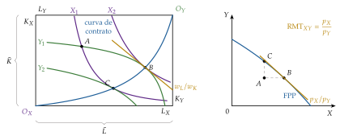
Fuente: elaboración propia a partir de Bator (1957).
I.2.2. Consumidores y demanda
Una vez obtenida la oferta de las empresas, pasamos al otro lado de los mercados: los consumidores, que demandan los bienes y ofrecen los factores.
Problema: con los supuestos de I.1, cada consumidor \(i=A,B\) vende su dotación de factores, recibe su parte de los beneficios y elige la cesta que maximiza su utilidad con la renta (1): \[\begin{array}{rl}\displaystyle \max_{X_i,Y_i} & \displaystyle U_i(X_i,Y_i) \\ \text{s.a.} & p_XX_i+p_YY_i=\overline{W}_i \\ & X_i\geq 0,\ Y_i\geq 0\end{array} \tag{5}\]
Condición de primer orden: cada consumidor iguala la tasa a la que está dispuesto a cambiar un bien por otro con la que le ofrece el mercado, y como los 2 ven los mismos precios, sus RMS se igualan: \[\mathrm{RMS}^A_{XY}=\frac{\partial U_A/\partial X_A}{\partial U_A/\partial Y_A}=\frac{p_X}{p_Y}=\frac{\partial U_B/\partial X_B}{\partial U_B/\partial Y_B}=\mathrm{RMS}^B_{XY}. \tag{6}\]
Resultado: las demandas \(X_i(\vec{p})\) e \(Y_i(\vec{p})\) [ver tema 3.A.8], que dependen solo de los precios, porque la renta (1) depende de ellos. Son:
únicas, por la convexidad estricta de las preferencias;
continuas en los precios;
homogéneas de grado 0 en todos los precios: si \(\vec{p}\) se multiplica por \(\alpha>0\), la renta \(\overline{W}_i\) también, y la restricción presupuestaria no cambia. No hay ilusión monetaria: solo importan los precios relativos, y cualquier bien puede servir de numerario;
agotan la renta por la monotonía de las preferencias: es la ley de Walras individual, \(p_XX_i+p_YY_i=\overline{W}_i\) [ver tema 3.A.8]; sumada para todos los agentes, da la ley de Walras del apartado I.2.4.
Oferta de factores: en el modelo básico el ocio no da utilidad, así que cada consumidor ofrece toda su dotación, \(\overline{L}_i\) y \(\overline{K}_i\), sea cual sea su precio.
La demanda de mercado
Para pasar de cada consumidor al mercado hay que sumar, y la suma no es inocente: conserva unas propiedades de las demandas individuales y pierde otras. Las que conserva son justo las que necesita el exceso de demanda para que el equilibrio exista (II.1.1); las que pierde explican por qué la unicidad y la estabilidad son tan difíciles de garantizar (II.1.2 y II.1.3).
Cómo se obtiene: la demanda de mercado de un bien es la suma horizontal de las demandas individuales. A cada vector de precios se suman las cantidades que demanda cada consumidor con la renta que obtiene a esos precios: \[X(\vec{p})=X_A\big(\vec{p},\overline{W}_A(\vec{p})\big)+X_B\big(\vec{p},\overline{W}_B(\vec{p})\big),\qquad\text{y en general}\quad \vec{x}(\vec{p})=\sum_{i=1}^{I}\vec{x}_i\big(\vec{p},\overline{W}_i(\vec{p})\big). \tag{7}\] Gráficamente, en el plano \((X,p_X)\) y con los demás precios fijos, a cada precio se suman en horizontal las cantidades de \(A\) y de \(B\).
Qué hereda: las propiedades que se conservan al sumar:
la continuidad: la suma de funciones continuas es continua;
la homogeneidad de grado 0 en todos los precios: si cada sumando no cambia al multiplicar \(\vec{p}\) por \(\alpha>0\), la suma tampoco;
la ley de Walras: sumando las restricciones presupuestarias, el gasto total iguala la renta total, \(\vec{p}\cdot\vec{x}(\vec{p})=\sum_i\overline{W}_i(\vec{p})\);
la cota inferior: ningún consumidor demanda cantidades negativas.
Qué no hereda: las propiedades que dependen de cómo responde cada consumidor a los cambios de su renta:
la demanda de mercado depende de cómo se reparte la renta, no solo de su total: si los precios pasan renta de \(A\) a \(B\) y estos gastan de forma distinta, la demanda cambia aunque la renta total no cambie. Solo depende de la renta total si todos los consumidores gastan igual cada euro adicional (curvas de Engel rectas y paralelas entre consumidores: la forma polar de Gorman) (Mas-Colell, Whinston y Green, 1995, párr. 4.B);
la ley de la demanda y la simetría y la semidefinición negativa de la matriz de Slutsky, que valen para cada consumidor [ver tema 3.A.9], no tienen por qué valer en el agregado;
el axioma débil de la preferencia revelada: cada consumidor lo cumple [ver tema 3.A.8], pero la demanda de mercado no tiene por qué cumplirlo (Mas-Colell, Whinston y Green, 1995, párr. 4.C).
Por qué en equilibrio general es más grave: la renta de cada consumidor no está dada, sino que sale de vender su dotación a los precios de mercado. Si sube el precio de un bien, quien lo vende se enriquece y quien lo compra se empobrece: a los efectos sustitución y renta de siempre se suma un efecto renta-dotación.19 Por eso incluso la demanda de un solo consumidor puede aumentar con el precio del bien, y al sumar consumidores con dotaciones distintas los efectos renta no se compensan.
Por qué importa para el exceso de demanda: el exceso de demanda de I.2.3 es la demanda de mercado menos la oferta. Hereda de ella la continuidad, la homogeneidad de grado 0 y la ley de Walras, que bastan para la existencia, pero no ninguna forma concreta (no tiene por qué ser decreciente en su propio precio): es lo que dice el teorema de Sonnenschein-Mantel-Debreu (II.1.2).
I.2.3. Función de exceso de demanda
Con la oferta de las empresas y la demanda de los consumidores ya podemos juntar los 2 lados de cada mercado en una sola función.
Definición: el exceso de demanda de un bien o factor es la diferencia entre lo que se demanda y lo que se ofrece a unos precios dados. En el 2×2×2×2, \[z_X(\vec{p})=X_A(\vec{p})+X_B(\vec{p})-q_X(\vec{p}),\qquad z_L(\vec{p})=L_X(\vec{p})+L_Y(\vec{p})-\overline{L}, \tag{8}\] y análogamente \(z_Y\) y \(z_K\).20 Así, \(z_k>0\) si la demanda supera a la oferta y \(z_k<0\) si hay exceso de oferta.
Caso general: con \(n\) bienes (los factores son bienes más), \(I\) consumidores con dotaciones \(\vec{\omega}_i\) y \(J\) empresas con planes de producción netos \(\vec{y}_j\) (anexo A), el vector de excesos de demanda es
\[\vec{z}(\vec{p})=\sum_{i=1}^{I}\vec{x}_i\big(\vec{p},\overline{W}_i(\vec{p})\big)-\sum_{i=1}^{I}\vec{\omega}_i-\sum_{j=1}^{J}\vec{y}_j(\vec{p})\tag{9}\]
con la renta de cada consumidor \(\overline{W}_i(\vec{p})=\vec{p}\cdot\vec{\omega}_i+\sum_{j}\theta_{ij}B_j(\vec{p})\).
Ventaja: todo el modelo queda en función de los precios: basta buscar los precios que anulan \(\vec{z}\), sin calcular las cantidades de cada agente.
Propiedades, que hereda de la demanda y de la oferta y que son las que se usan en el análisis positivo (II.1):
es continua (para precios positivos);
es homogénea de grado 0 en \(\vec{p}\): \(\vec{z}(\alpha\vec{p})=\vec{z}(\vec{p})\) para todo \(\alpha>0\);
cumple la ley de Walras, \(\vec{p}\cdot\vec{z}(\vec{p})\equiv 0\) (I.2.4);
está acotada inferiormente, porque nadie puede ofrecer más de lo que tiene, y, si los bienes son deseables, cumple una condición de frontera: el exceso de demanda de un bien crece sin límite cuando su precio tiende a 0.
Tipos de bienes: según su exceso de demanda en el equilibrio, hay 2 (gráfico 2: arriba, la oferta y la demanda de cada bien; abajo, su función de exceso de demanda \(z_k(p_k)\), con los demás precios dados):
bienes económicos: escasos; hay un precio positivo que vacía su mercado, \(p^*_k>0\) y \(z_k(\vec{p}^*)=0\). Su función de exceso de demanda es positiva a precios bajos, negativa a precios altos y corta el eje de precios justo en \(p^*_k\);
bienes libres: incluso a precio nulo la oferta supera a la demanda, \(p^*_k=0\) y \(z_k(\vec{p}^*)\leq 0\) (el aire que se respira). Su función de exceso de demanda queda por debajo de 0 en todo su recorrido, también en \(p_k=0\), así que no corta el eje: el precio no puede bajar más y el bien sigue sobrando. Admitirlos permite que el modelo tenga solución también en ese caso: es la aportación de Schlesinger (1935) y de Wald (1935).
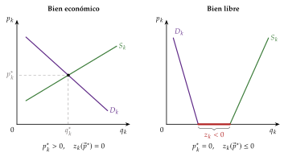
Fuente: elaboración propia a partir de Gravelle y Rees (2004).
I.2.4. Ley de Walras
Las propiedades del exceso de demanda tienen una consecuencia que da forma a todo el modelo: la ley de Walras.
Enunciado: la ley de Walras dice que, para cualquier vector de precios, dentro o fuera del equilibrio, el valor de los excesos de demanda suma 0:
\[\vec{p}\cdot\vec{z}(\vec{p})\equiv\sum_{k=1}^{n}p_k\,z_k(\vec{p})=0\tag{10}\]
En el 2×2×2×2, \(p_Xz_X+p_Yz_Y+w_Lz_L+w_Kz_K\equiv 0\).
Demostración: cada consumidor agota su renta, \(\vec{p}\cdot\vec{x}_i=\vec{p}\cdot\vec{\omega}_i+\sum_j\theta_{ij}\,\vec{p}\cdot\vec{y}_j\). Sumando para todos los consumidores y usando que los beneficios se reparten enteros, \(\sum_i\theta_{ij}=1\), queda \(\vec{p}\cdot\big(\sum_i\vec{x}_i-\sum_i\vec{\omega}_i-\sum_j\vec{y}_j\big)=0\). Solo exige que las preferencias sean localmente no saciables, para que las restricciones presupuestarias se saturen.∎
Implicaciones:
los mercados son interdependientes: un exceso de demanda en un mercado tiene su contrapartida en un exceso de oferta de igual valor en otro;
si \(n-1\) mercados están en equilibrio y \(p_n>0\), el \(n\)-ésimo también lo está: de las \(n\) condiciones de vaciado solo \(n-1\) son independientes. En el 2×2×2×2, si se vacían 3 mercados, se vacía el cuarto;
con la homogeneidad de grado 0, el sistema solo determina los \(n-1\) precios relativos. Hay que fijar una normalización: Walras elige un bien como numerario (\(p_1=1\)); también puede usarse el símplice, \(\sum_kp_k=1\) (II.1.1). Los precios absolutos quedan indeterminados porque en el modelo no hay dinero (III.3).
Naturaleza: la ley de Walras es una identidad, no una condición de equilibrio: se cumple a cualquier precio porque se deduce de las restricciones presupuestarias.21
I.3. Implicaciones: equilibrio general competitivo
Una vez obtenidos el comportamiento de todos los agentes y el exceso de demanda, pasamos a definir el objeto central del tema: el equilibrio.
Definición: un equilibrio general competitivo (o walrasiano) es un vector de precios \(\vec{p}^*\geq\vec{0}\) y una asignación \((\vec{x}^*_i,\vec{y}^*_j)\) tales que:
cada consumidor maximiza su utilidad a los precios \(\vec{p}^*\), dada su renta;
cada empresa maximiza su beneficio a los precios \(\vec{p}^*\);
todos los mercados se vacían,
\[z_k(\vec{p}^*)\leq 0\quad\text{y}\quad p^*_k\,z_k(\vec{p}^*)=0,\qquad k=1,\dots,n\tag{11}\]
es decir, \(z_k(\vec{p}^*)=0\) si \(p^*_k>0\) (bienes económicos) y \(z_k(\vec{p}^*)\leq 0\) si \(p^*_k=0\) (bienes libres).
En el 2×2×2×2: el equilibrio reúne las condiciones de los apartados anteriores, con los 4 mercados vaciados: \[\mathrm{RMS}^A_{XY}=\mathrm{RMS}^B_{XY}=\frac{p_X}{p_Y}=\mathrm{RMT}_{XY},\qquad \mathrm{RMST}^X_{LK}=\mathrm{RMST}^Y_{LK}=\frac{w_L}{w_K}. \tag{12}\]
Formación de los precios: ¿quién los fija? La literatura personifica el tanteo de Walras en un subastador walrasiano: anuncia unos precios, cada agente dice cuánto demandaría u ofrecería, y si en algún mercado hay exceso de demanda o de oferta no se realiza ninguna transacción y el subastador vuelve a anunciar precios, más altos donde sobra demanda y más bajos donde sobra oferta, hasta que se vacían todos los mercados. Es un sistema de prueba y error sin intercambios fuera del equilibrio.
Interpretación gráfica: la caja de Edgeworth del intercambio
El equilibrio se ve en el caso más sencillo, una economía de intercambio puro con 2 consumidores y 2 bienes (gráfico 3). La caja de Edgeworth tiene por lados las dotaciones totales de los 2 bienes, \(\overline{X}\) e \(\overline{Y}\); cada punto es un reparto de los bienes: el consumo de \(A\) se mide desde \(O_A\) y el de \(B\), desde \(O_B\). El punto \(\vec{\omega}\) es la dotación inicial, y por él pasan las curvas de indiferencia \(U_A^0\) y \(U_B^0\).
Unos precios relativos son una recta que pasa por \(\vec{\omega}\) con pendiente \(-p_X/p_Y\): es a la vez la restricción presupuestaria de los 2 consumidores. Si la recta gira alrededor de \(\vec{\omega}\), los puntos de tangencia con las curvas de indiferencia de cada consumidor dibujan su curva de oferta-demanda (\(\mathrm{OD}_A\) y \(\mathrm{OD}_B\)): lo que desea intercambiar a cada precio relativo.
A un precio relativo cualquiera los deseos no son compatibles: \(A\) quiere el punto \(\vec{x}_A\) de la recta y \(B\) el punto \(\vec{x}_B\); la diferencia horizontal es el exceso de demanda de \(X\), que la ley de Walras compensa con un exceso de oferta de \(Y\) de igual valor, y el precio relativo de \(X\) debe subir.
El equilibrio \(E\) está donde se cortan \(\mathrm{OD}_A\) y \(\mathrm{OD}_B\): allí los 2 consumidores eligen el mismo punto, los 2 mercados se vacían y \(\mathrm{RMS}^A_{XY}=p^*_X/p^*_Y=\mathrm{RMS}^B_{XY}\). Como las curvas de indiferencia \(U_A^*\) y \(U_B^*\) son tangentes en \(E\), el equilibrio está dentro de la lente que forman las curvas de indiferencia que pasan por \(\vec{\omega}\) (los 2 ganan con el intercambio) y en el lugar de las tangencias, que el apartado II.2 identifica con los óptimos de Pareto.
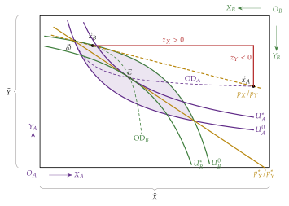
Fuente: elaboración propia a partir de Segura (1996, cap. 7) y Mas-Colell, Whinston y Green (1995, cap. 15).
Valoración: el subastador es la pieza más irreal del modelo: alguien ajeno a los agentes fija los precios y nadie comercia fuera del equilibrio. Por eso el bloque III busca fundamentos alternativos del equilibrio walrasiano (negociación, núcleo, juegos).
Recapitulando: con agentes precio-aceptantes y preferencias y tecnologías convexas, el modelo se reduce a un sistema de excesos de demanda que dependen solo de los precios relativos, y el equilibrio general competitivo está bien definido. Pero ¿existe?, ¿es único?, ¿se alcanza?, ¿es bueno? Son las preguntas del bloque II.
Qué es de este tema y qué del tema 3.A.16: la competencia perfecta en un mercado aislado (equilibrio parcial, corto y largo plazo, ajuste y estabilidad de ese mercado) es materia del equilibrio parcial [ver tema 3.A.16]. Aquí lo propio es la interdependencia: la economía como un sistema de ecuaciones simultáneas en el que todos los precios son endógenos y se determinan a la vez, el recuento de ecuaciones e incógnitas, el exceso de demanda y la ley de Walras. Conviene subrayarlo en el cante para que no parezca el equilibrio parcial con más mercados.
II. Análisis positivo y normativo del equilibrio general competitivo
Idea: una vez construido el modelo y definido el equilibrio (bloque I), pasamos a estudiar sus propiedades:
Conclusión anticipada: con supuestos razonables el equilibrio existe; pero solo con supuestos fuertes es único y estable, y el teorema de Sonnenschein-Mantel-Debreu muestra que la racionalidad individual no los garantiza. En cambio, el equilibrio es eficiente con muy pocos supuestos.
En el cante: las 3 preguntas y por qué importan (0′30″); la existencia con la intuición del subastador como aplicación del símplice en sí mismo y el punto fijo de Brouwer (gráfico 4) (3′); la unicidad con el gráfico de los equilibrios múltiples (gráfico 5), las economías regulares, los sustitutivos brutos y el teorema SMD (2′); la estabilidad con el tanteo, la distancia al equilibrio, Arrow-Block-Hurwicz y el contraejemplo de Scarf, con las flechas en el mismo gráfico (1′30″), y el análisis normativo sobre la caja de intercambio: óptimo de Pareto y los 2 teoremas fundamentales con su nombre completo, su idea y sus supuestos, en palabras (2′). Las demostraciones de la existencia, de la unicidad (por el axioma débil y por los sustitutivos brutos) y de la estabilidad del tanteo están en el anexo B; la estabilidad en un mercado, en el anexo D; la estática comparativa y los teoremas del bienestar en detalle, en sus anexos.
II.1. Análisis positivo del equilibrio general competitivo
Las 3 preguntas: un modelo que pretende explicar los precios tiene que responder a 3:
existencia: ¿hay algún vector de precios que vacíe todos los mercados? Si no, el modelo no describe nada y no puede servir para valorar el mercado como mecanismo de asignación;
unicidad: ¿hay solo uno? Si hay varios, el modelo no predice cuál se alcanza y la estática comparativa pierde sentido;
estabilidad: si la economía está fuera del equilibrio, ¿la llevan a él las fuerzas del mercado? Un equilibrio inestable es una curiosidad matemática.
El orden: cada pregunta presupone la anterior:
primero, si hay algún equilibrio;
después, cuántos hay;
por último, si la economía llega a alguno.
II.1.1. Existencia
a) Idea
La existencia importa porque un equilibrio competitivo no tiene por qué existir a priori: un mecanismo de asignación sin equilibrio es inútil.
Walras creyó resolverla contando ecuaciones e incógnitas: con el numerario hay \(n-1\) precios relativos y, por la ley de Walras, \(n-1\) ecuaciones independientes.22
El problema lo plantean Schlesinger (1935), que introduce desigualdades y bienes libres, y Wald (1936), que da las primeras pruebas para el modelo de Cassel.
La solución general llega en los años 50 con los teoremas de punto fijo: Arrow y Debreu (1954) y McKenzie (1954), y después Gale (1955), Nikaidô (1956), McKenzie (1959) y Debreu (1959); Gale (1976) la extiende a preferencias débilmente convexas, como las de utilidad lineal. La idea clave es que un equilibrio es un vector de precios que el propio proceso de ajuste deja donde está.23
b) Modelo
i) Supuestos
Sobre el exceso de demanda: basta con que sea continuo, homogéneo de grado 0 y cumpla la ley de Walras (I.2.3). Detrás están las preferencias y las tecnologías convexas y la no saciedad local: sin convexidad, la demanda o la oferta pueden «saltar» y el exceso de demanda deja de ser continuo.24
Herramienta: el teorema del punto fijo de Brouwer (Brouwer, 1911). Si \(\Delta\subset\mathbb{R}^n\) es no vacío, compacto (cerrado y acotado) y convexo, y \(\vec{f}:\Delta\to\Delta\) es continua, existe \(\vec{p}^*\in\Delta\) con \(\vec{f}(\vec{p}^*)=\vec{p}^*\). En una dimensión, la gráfica de una función continua de \([0,1]\) en \([0,1]\) corta necesariamente la diagonal (gráfico 4).25
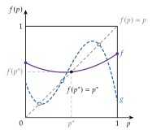
Fuente: elaboración propia a partir de Delgado Toral (2014).
ii) Desarrollo
La prueba tiene 3 pasos:
un conjunto de precios con las propiedades que pide Brouwer;
una función continua de ese conjunto en sí mismo que imita al subastador;
la comprobación de que su punto fijo es un equilibrio.
Aquí va la intuición de cada paso; la demostración completa, en el anexo B.
El conjunto: por la homogeneidad de grado 0 se pueden normalizar los precios para que sumen 1. El símplice \[\Delta=\Big\{\vec{p}\in\mathbb{R}^n_+:\ \sum_{k=1}^{n}p_k=1\Big\} \tag{13}\] es no vacío, cerrado, acotado y convexo.
La función: el subastador como regla que asigna a cada vector de precios otro, subiendo los precios con exceso de demanda y bajando los de exceso de oferta, sin salir del símplice (\(\kappa_k>0\) es la velocidad de ajuste del mercado \(k\)): \[f_k(\vec{p})=\frac{\max\{0,\ p_k+\kappa_k\,z_k(\vec{p})\}}{\sum_{l=1}^{n}\max\{0,\ p_l+\kappa_l\,z_l(\vec{p})\}},\qquad k=1,\dots,n. \tag{14}\] El máximo impide precios negativos26 y el denominador devuelve el vector al símplice. Es continua si \(\vec{z}\) lo es y lleva \(\Delta\) en sí mismo; por Brouwer, tiene un punto fijo \(\vec{p}^*=\vec{f}(\vec{p}^*)\).
El punto fijo es un equilibrio: un vector de precios que el subastador ya no cambia es uno en el que ningún precio tiene motivo para moverse. Los bienes con precio nulo tienen exceso de demanda no positivo (bienes libres) y, por la ley de Walras, los de precio positivo tienen exceso de demanda nulo (bienes económicos): se cumple (11) (demostración en el anexo B).
iii) Implicaciones
El equilibrio existe con supuestos sobre los agentes que no son más fuertes que los de la teoría del consumidor y de la empresa: la coordinación por precios es lógicamente posible.
La prueba es no constructiva: dice que hay un equilibrio, no cómo encontrarlo ni si el tanteo lleva a él.
c) Valoración
Supuestos cruciales: la convexidad y la ausencia de poder de mercado, que el apartado III.2 relaja.
Lo que no dice: nada del número de equilibrios ni de cómo se alcanzan: son las preguntas de los apartados siguientes.
Lecturas: Delgado Toral (2014), introducción a los teoremas de punto fijo y a la existencia de equilibrios en economía (https://doi.
II.1.2. Unicidad
Una vez que sabemos que el equilibrio existe, la pregunta siguiente es cuántos hay.
a) Idea
Existencia no implica unicidad: con 2 bienes y \(p_Y=1\), el exceso de demanda de \(X\), \(z_X(p_X,1)\), es positivo para precios muy bajos y negativo para precios muy altos, así que corta el eje un número impar de veces, pero pueden ser 3 o más (gráfico 5).
Por qué importa: con equilibrios múltiples el modelo no predice cuál se alcanza y la estática comparativa27 pierde sentido: no se sabe a qué equilibrio irá la economía tras una perturbación, y la política económica no puede anticipar sus efectos.
Lo que se sabe en general: Debreu (1970) prueba que, salvo en un conjunto de economías de medida nula (economías regulares), el número de equilibrios es finito y cada uno es localmente único (no hay continuos de equilibrios). Además, el número es impar, por el teorema del índice (Dierker, 1972): en el gráfico, los cortes alternan de pendiente negativa (índice \(+1\)) y positiva (índice \(-1\)), y la suma de los índices es \(+1\). Para que sea uno solo hacen falta supuestos adicionales: es el modelo que sigue.
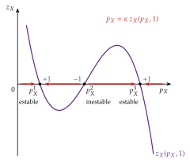
Fuente: elaboración propia a partir de Mas-Colell, Whinston y Green (1995, párr. 17.D y §17.H).
b) Modelo
i) Supuestos
Los de la existencia: exceso de demanda continuo, homogéneo de grado 0, que cumple la ley de Walras y la condición de frontera, de modo que todos los precios de equilibrio son positivos y en el equilibrio \(\vec{z}(\vec{p}^*)=\vec{0}\).
Una condición sobre la forma del exceso de demanda, que la teoría del consumidor no garantiza en el agregado (I.2.2). Hay 2 condiciones suficientes conocidas:
sustitutivos brutos: todos los bienes lo son si el exceso de demanda de cada uno aumenta con el precio de cualquier otro, \[\frac{\partial z_k(\vec{p})}{\partial p_l}>0\qquad\forall\,l\neq k. \tag{15}\] En palabras: cuando un bien se encarece, los agentes se pasan a todos los demás, y ningún efecto renta lo contrarresta. «Brutos» porque incluye los efectos renta (también el de la dotación), no solo el de sustitución;
axioma débil de la preferencia revelada agregado: la demanda de mercado se comporta como la de un único consumidor coherente, que nunca elige una cesta pudiendo pagar otra y la otra pudiendo pagar la primera.
ii) Desarrollo
Sustitutivos brutos, la intuición: supongamos que hubiera 2 equilibrios distintos (no proporcionales). Al pasar de uno a otro, algún bien es el que menos se encarece en términos relativos. Como solo importan los precios relativos, podemos medir el segundo equilibrio de modo que ese bien cueste lo mismo en los 2: entonces todos los demás bienes están igual o más caros, y alguno estrictamente más caro.
Si todos son sustitutivos de ese bien, los agentes se pasan a él: su demanda neta sube y su exceso de demanda, que era 0 en el primer equilibrio, pasa a ser positivo en el segundo.
Pero en un equilibrio su exceso de demanda tiene que ser 0: el segundo vector de precios no puede ser de equilibrio. Hay uno solo.
Con 2 bienes, en el gráfico: por la homogeneidad, subir \(p_X\) con \(p_Y=1\) es lo mismo que abaratar \(Y\) frente a \(X\), y con sustitutivos brutos abaratar \(Y\) reduce la demanda de \(X\). Así que \(z_X(p_X,1)\) es siempre decreciente y corta el eje una sola vez: el tramo creciente del gráfico 5, que da lugar al equilibrio intermedio y obliga a que haya 3, no puede existir. Con la ley de Walras, \(p_Xz_X+p_Yz_Y=0\): si \(z_X<0\) a la derecha del equilibrio, \(z_Y>0\), y ese vector de precios tampoco vacía el mercado de \(Y\).
Axioma débil, la intuición: si hubiera 2 equilibrios con asignaciones distintas, las empresas, que maximizan el beneficio, harían que en cada uno de ellos la cesta del otro fuera asequible. El «consumidor agregado» habría elegido \(A\) pudiendo pagar \(B\) y \(B\) pudiendo pagar \(A\), lo que el axioma débil prohíbe.
La condición común: las 2 se resumen en una condición sobre \(\vec{z}\) (Mas-Colell, Whinston y Green, 1995, párr. 17.F), \[\vec{p}^*\cdot\vec{z}(\vec{p})>0\quad\text{para todo }\vec{p}\text{ no proporcional a }\vec{p}^*, \tag{16}\] es decir, valorada a los precios de equilibrio, la cesta de excesos de demanda a cualquier otro precio «no se puede pagar». Si se cumple, no puede haber otro equilibrio \(\vec{p}^1\), porque sería \(\vec{z}(\vec{p}^1)=\vec{0}\) y \(\vec{p}^*\cdot\vec{z}(\vec{p}^1)=0\).
Demostraciones: las 2, paso a paso y por reducción al absurdo, están en el anexo B.2.
iii) Implicaciones
Unicidad global: con cualquiera de las 2 condiciones el equilibrio es único (en precios relativos) y la estática comparativa tiene sentido; con sustitutivos brutos se conoce además su signo: un aumento de la demanda de un bien sube su precio relativo frente a todos los demás (Mas-Colell, Whinston y Green, 1995, párr. 17.G).
Unicidad y estabilidad van juntas: la condición (16) es la misma que asegura que el tanteo converge (II.1.3).
c) Valoración
Condiciones muy restrictivas: son suficientes, no necesarias. La sustitución bruta exige que los efectos sustitución dominen a los efectos renta en todos los bienes y a todos los precios, y excluye los complementarios; el axioma débil agregado, que los cambios de precios no redistribuyan la renta entre consumidores que gastan de forma distinta (preferencias homotéticas y dotaciones proporcionales) (Mas-Colell, Whinston y Green, 1995, párr. 4.C y §17.F).
Teorema de Sonnenschein-Mantel-Debreu (SMD): cualquier función continua, homogénea de grado 0 y que cumpla la ley de Walras es, para precios estrictamente positivos, el exceso de demanda agregado de alguna economía de intercambio con consumidores racionales (Sonnenschein, 1972, 1973; Mantel, 1974; Debreu, 1974). La racionalidad individual no impone ninguna restricción adicional al agregado: cualquier número (impar) de equilibrios y cualquier dinámica son posibles.28
Consecuencia: unicidad y estabilidad dependen de supuestos sobre la distribución de las preferencias y de las dotaciones, no de la teoría del consumidor (Mas-Colell, Whinston y Green, 1995, párr. 17.E). Es lo que hace tan difícil la pregunta siguiente.
II.1.3. Estabilidad
Saber que el equilibrio existe, e incluso que es único, no basta: falta saber si la economía llega a él.
a) Idea
Qué es: un equilibrio es estable si, cuando la economía está fuera de él, hay fuerzas que la empujan hacia él: los precios (y las cantidades) convergen con el tiempo al equilibrio. Se distinguen 2 grados:
estabilidad local: el equilibrio se restablece tras una perturbación pequeña, si el punto de partida está cerca;
estabilidad global: se restablece tras cualquier perturbación, desde cualquier punto de partida.
Por qué importa:
si el equilibrio es estable, es un argumento a favor de la «mano invisible» de Smith: el propio mercado, sin intervención pública, tiende a él. La mano invisible no solo es posible: además, el mercado la encuentra;
si no lo es, la economía puede alejarse del equilibrio y quedarse lejos, y eso puede justificar la intervención pública para reconducirla. Musgrave (1959) incluye la estabilización entre las 3 funciones del sector público, junto a la asignación y la distribución. Es una analogía: la estabilización de Musgrave se refiere al empleo y a los precios del conjunto de la economía; aquí la pregunta es si el tanteo lleva los precios relativos a su equilibrio.
2 mecanismos de ajuste:
ajuste walrasiano (por precios): el precio sube si hay exceso de demanda y baja si hay exceso de oferta; es el tanteo del subastador;
ajuste marshalliano (por cantidades): la cantidad aumenta si lo que los compradores están dispuestos a pagar supera lo que piden los vendedores.
En un solo mercado los 2 pueden dar resultados opuestos (anexo D) [ver tema 3.A.16]. En equilibrio general se estudia el walrasiano, porque en el modelo la variable de ajuste son los precios (I.1).
Por qué es más difícil en equilibrio general: un cambio en el precio de un bien desplaza los excesos de demanda de todos los demás, que mueven a su vez sus precios y vuelven a afectar al primero. No basta con mirar la pendiente de cada mercado por separado: hay que estudiar el sistema entero a la vez.
b) Modelo
i) Supuestos
Tanteo walrasiano en tiempo continuo, sin intercambios fuera del equilibrio: el subastador ajusta cada precio según su exceso de demanda, subiéndolo si es positivo y bajándolo si es negativo, \[\dot p_k=\kappa_k\,z_k(\vec{p}),\qquad \kappa_k>0,\quad k=1,\dots,n, \tag{17}\] donde \(\kappa_k\) es la velocidad de ajuste del mercado \(k\). El equilibrio \(\vec{p}^*\) es globalmente estable si \(\vec{p}(t)\to\vec{p}^*\) desde cualquier precio inicial.
Exceso de demanda: con las propiedades de la existencia y la condición (16) de la unicidad, que se cumple, por ejemplo, si todos los bienes son sustitutivos brutos.
ii) Desarrollo
Intuición: se mide en cada momento lo lejos que están los precios del equilibrio. Si esa distancia se reduce siempre que no se está en el equilibrio, los precios acaban llegando a él, aunque no se sepa calcular su trayectoria. Es el método de la función de Liapunov.
La distancia al equilibrio: con velocidades iguales, \(\kappa_k=\kappa\), basta la distancia euclídea, \(\tfrac{1}{2\kappa}\lVert\vec{p}(t)-\vec{p}^*\rVert^2\); con velocidades distintas se ponderan los cuadrados. Usando (17) y la ley de Walras, \[\frac{d}{dt}\Bigg[\frac12\sum_{k=1}^{n}\frac{\big(p_k(t)-p^*_k\big)^2}{\kappa_k}\Bigg]=\sum_{k=1}^{n}\big(p_k-p^*_k\big)\,z_k(\vec{p})=\underbrace{\vec{p}\cdot\vec{z}(\vec{p})}_{=0}-\vec{p}^*\cdot\vec{z}(\vec{p}). \tag{18}\]
Interpretación: la distancia se reduce si \(\vec{p}^*\cdot\vec{z}(\vec{p})>0\) fuera del equilibrio, que es exactamente la condición (16) de la unicidad. Entonces la distancia baja sin parar mientras no se esté en el equilibrio y los precios convergen a \(\vec{p}^*\) (demostración en el anexo B.3).
Con 2 bienes, en el gráfico: con \(\dot p_X=\kappa\,z_X(p_X,1)\), el precio sube donde \(z_X>0\) y baja donde \(z_X<0\) (flechas del gráfico 5). Los equilibrios donde \(z_X\) corta el eje de arriba abajo (índice \(+1\)) atraen los precios y son estables; los otros los repelen y son inestables. Con varios equilibrios, estables e inestables se alternan.
iii) Implicaciones
Teorema de Arrow, Block y Hurwicz: Arrow, Block y Hurwicz (1959), tras Arrow y Hurwicz (1958), prueban que, si todos los bienes son sustitutivos brutos, el equilibrio es globalmente estable: la misma condición da a la vez unicidad y estabilidad.
Con 2 bienes y sustitutivos brutos: \(z_X(p_X,1)\) es decreciente y el único corte es de arriba abajo: el único equilibrio es estable.
c) Valoración
Contraejemplo de Scarf: H. E. Scarf (1960) construye una economía de 3 consumidores y 3 bienes complementarios (curvas de indiferencia en ángulo recto) con un equilibrio único que el tanteo no alcanza nunca: los precios giran indefinidamente a su alrededor. Y por el teorema SMD cualquier dinámica es posible.
Un proceso ficticio: en el tanteo nadie comercia hasta el final y el subastador no existe. Los procesos «sin tanteo», con intercambios a precios de desequilibrio, cambian las dotaciones por el camino; son estables con más facilidad, pero el equilibrio al que llegan depende del camino (Varian, 1992, cap. 21). Esta crítica une la teoría con la macroeconomía del desequilibrio (Clower, Leijonhufvud) [ver tema 3.A.4].
II.2. Análisis normativo del equilibrio general competitivo
Una vez estudiado qué dice el equilibrio como descripción de la economía (análisis positivo), pasamos a preguntarnos si es bueno (análisis normativo). Para ello hace falta, primero, un criterio con el que juzgar las asignaciones.
II.2.1. Optimalidad de Pareto
Definición: la pregunta normativa es si la asignación de equilibrio es deseable, que es el objeto de la economía del bienestar. El criterio menos exigente es el de Pareto (1906):29 una asignación es óptima en el sentido de Pareto (eficiente) si no existe otra factible que mejore a algún agente sin empeorar a ninguno.
Ventajas y límites: es un criterio:
ordinal, que no exige comparar utilidades;
basado en pocos juicios de valor;
pero incompleto: hay infinitos óptimos no comparables entre sí, entre ellos asignaciones muy desiguales30 [ver tema 3.A.22] [ver tema 3.A.24] (ventajas y críticas, en el anexo C).
En la caja de intercambio: los óptimos son las tangencias de las curvas de indiferencia, \(\mathrm{RMS}^A_{XY}=\mathrm{RMS}^B_{XY}\): la curva de contrato \(O_AO_B\) (gráfico 6).
II.2.2. Teoremas fundamentales de la economía del bienestar
Con el criterio de Pareto ya podemos preguntar si el equilibrio competitivo es eficiente, y al revés, si cualquier asignación eficiente puede alcanzarse con el mercado. La economía del bienestar responde con 2 teoremas, que relacionan los equilibrios competitivos y los óptimos de Pareto en los 2 sentidos.
Origen: sus condiciones marginales las formula Abba Lerner (1934, 1944), a la vez que Oskar Lange (1942b), en el marco del debate sobre el cálculo económico en el socialismo (III.2), y los desarrollan formalmente, por separado, Kenneth Arrow (1951) y Gérard Debreu (1951), con análisis convexo y sin necesidad de derivadas, de modo que valen también con soluciones de esquina (Debreu, 1959).
Primer teorema fundamental de la economía del bienestar (1TFEB)
Enunciado: si las preferencias son localmente no saciables, todo equilibrio general competitivo es óptimo de Pareto. No necesita convexidad.
Idea: cada agente, buscando solo su interés y mirando solo los precios, iguala su relación marginal (de sustitución o de transformación) al precio relativo. Como todos ven los mismos precios, todas las relaciones marginales acaban iguales entre sí, (12), y no queda ningún intercambio ni ninguna reasignación de factores que mejore a alguien sin empeorar a otro. En la caja, el equilibrio \(E\) está en la curva de contrato.
Por qué importa: es la formalización de la mano invisible de Smith: los precios transmiten toda la información necesaria y un sistema descentralizado, sin planificador, no desperdicia recursos.31
Supuestos: además de la no saciedad local, los implícitos en el modelo de I:
precios para todos los bienes (mercados completos, sin externalidades ni bienes públicos);
agentes precio-aceptantes (sin poder de mercado);
precios comunes a todos, sin impuestos que abran cuñas entre ellos;
información perfecta y simétrica: todos observan lo que entra en el intercambio [ver tema 3.A.13].
Cuando falla alguno, el equilibrio deja de ser eficiente: son los fallos de mercado [ver tema 3.A.23].
Lo que no dice: que el equilibrio sea justo. Depende de las dotaciones, y una asignación en la que uno lo tiene todo también es eficiente.32
Segundo teorema fundamental de la economía del bienestar (2TFEB)
Enunciado: con preferencias y tecnologías convexas (además de continuas y localmente no saciables), todo óptimo de Pareto puede alcanzarse como equilibrio competitivo tras una redistribución de suma fija de las dotaciones.
Idea: es el recíproco del primero. Si la sociedad prefiere otro óptimo, por ejemplo uno más igualitario, no hace falta sustituir el mercado: basta con repartir de otra forma las dotaciones y dejar que el mercado haga el resto. En la caja, para llevar la economía a otro punto \(E'\) de la curva de contrato basta pasar la dotación de \(\vec{\omega}\) a un \(\vec{\omega}'\) de la recta de precios que es tangente en \(E'\).
Por qué importa: separa eficiencia y equidad. El Estado puede ocuparse de la distribución con transferencias y dejar la asignación al mercado, y justifica la intervención pública también por motivos de equidad.
Supuestos: la convexidad es aquí imprescindible, no un supuesto técnico: sin ella puede no haber una recta de precios que deje a cada consumidor en su mejor punto alcanzable. Hacen falta además transferencias de suma fija, que no dependan de lo que hace cada agente.
Lo que no dice: cómo hacer esas transferencias. Las de suma fija que dependen de las características de cada uno no son factibles (la información es privada) y los impuestos reales distorsionan, de modo que reaparece el dilema entre equidad y eficiencia.
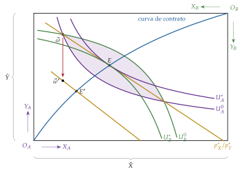
Fuente: elaboración propia a partir de Segura (1996, cap. 7) y Mas-Colell, Whinston y Green (1995, cap. 16).
Su papel en este tema: los 2 teoremas valen para cualquier equilibrio, sea único o no, y su desarrollo es materia de la economía del bienestar [ver tema 3.A.22] (supuestos, críticas y demostración del 1TFEB, en el anexo C). Lo que interesa aquí es que dicen qué supuestos del modelo de I hacen falta para que la descentralización funcione. Cuando falla alguno (externalidades, bienes públicos, poder de mercado, información asimétrica), el equilibrio deja de ser eficiente [ver tema 3.A.23] [ver tema 3.A.13], y el óptimo de Pareto que se alcanza no tiene por qué ser el que maximiza el bienestar social [ver tema 3.A.24].
Recapitulando: el equilibrio competitivo existe con supuestos razonables, pero su unicidad y su estabilidad exigen condiciones fuertes, y es eficiente si los mercados son completos y competitivos. El bloque III relaja precisamente esos supuestos: el precio dado, la convexidad, la ausencia de dinero y la de tiempo e incertidumbre.
Reparto con los temas del bienestar. Aquí, el óptimo de Pareto y los 2 teoremas van como propiedades del equilibrio general competitivo: enunciado, idea, supuestos y alcance en palabras, sobre la caja. Su desarrollo corresponde a los temas 3.A.22, 3.A.23 y 3.A.24: el criterio de Pareto, las condiciones del óptimo, los 2 teoremas (también el segundo) con sus supuestos y el second best [ver tema 3.A.22]; los fallos de mercado (externalidades y bienes públicos) por los que el equilibrio competitivo deja de ser eficiente, y la intervención [ver tema 3.A.23], y cómo elegir entre los óptimos con una función de bienestar social, que no tiene por qué coincidir con el equilibrio alcanzado, y la elección colectiva [ver tema 3.A.24]. En el cante, cada teorema se nombra completo la primera vez y después con sus siglas.
III. Otros desarrollos posteriores y aplicaciones
Idea: una vez estudiadas las propiedades del equilibrio general competitivo (bloque II), pasamos a comprobar cuán robusto es. Cada desarrollo de este bloque relaja un supuesto del modelo de I que las propiedades de II necesitaban:
El último apartado muestra cómo se usa el modelo en la práctica (III.5).
Conclusión anticipada: el equilibrio walrasiano resiste bien cuando se quita el subastador y se deja negociar a muchos agentes (el núcleo converge a él), pero no cuando hay poder de mercado, no convexidades, mercados incompletos o dinero sin valor intrínseco: ahí la teoría necesita supuestos nuevos y la eficiencia deja de estar garantizada.
En el cante: Edgeworth sobre la caja de intercambio que sigue en la pizarra, con la lente, el tramo \(CC'\) y una frase sobre la teoría de la negociación, que elige un punto de ese tramo (1′); el núcleo, el teorema de Debreu y Scarf con el núcleo que se encoge, el comportamiento estratégico y las no convexidades contadas en palabras (2′); el dinero: por qué no tiene sitio en el modelo de Arrow-Debreu, la dicotomía clásica, la ley de Walras con dinero, por qué la dicotomía es inválida y el efecto saldos reales de Patinkin (1′); los bienes contingentes con el ejemplo del paraguas, los títulos de Arrow y los mercados incompletos (1′30″), y los modelos computables con un ejemplo (1′). Son de profundización la nota de la teoría de la negociación (Nash y Rubinstein), las cajas grises del desarrollo técnico de las no convexidades y del dinero, el recuadro del monopolio, el diseño de mecanismos, las 4 vías modernas para introducir el dinero (que se desarrollan en el tema 3.A.35) y los modelos de las instituciones. Si falta tiempo, III.1 se funde con el núcleo en una frase y III.5 se reduce a Scarf y un ejemplo.
III.1. Teoría del intercambio de Edgeworth
Empezamos por el supuesto más irreal del bloque I: el subastador que anuncia los precios.
a) Idea
Walras supone que hay precios para todas las mercancías y que alguien los anuncia; no explica cómo se forman. Edgeworth (1881) prescinde de cualquier institución que genere precios: los agentes negocian libremente y pueden rehacer los acuerdos (recontracting) hasta que nadie quiera cambiar.
b) Modelo
i) Supuestos
ii) Desarrollo
Un acuerdo final debe cumplir 2 condiciones:
racionalidad individual: ninguno acepta quedar peor que con su dotación, así que el acuerdo está dentro de la lente que forman las curvas de indiferencia que pasan por \(\vec{\omega}\);
eficiencia: si no estuviera en la curva de contrato, los 2 podrían mejorar.
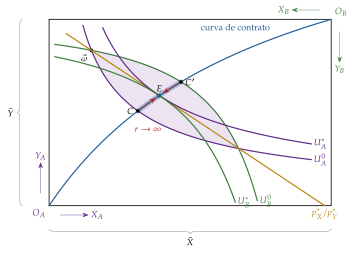
Fuente: elaboración propia a partir de Gravelle y Rees (2004, cap. 12) y Mas-Colell, Whinston y Green (1995, cap. 18).
iii) Implicaciones
Un tramo, no un punto: el resultado es el tramo \(CC'\) de la curva de contrato dentro de la lente. En el modelo walrasiano el precio lo fija el mercado y el resultado no depende del poder negociador; en el de Edgeworth, con 2 agentes, el intercambio está indeterminado: el punto final depende del poder de negociación de cada uno, y la relación de intercambio implícita es la pendiente de la recta que une \(\vec{\omega}\) con ese punto. El equilibrio walrasiano \(E\) es uno de esos puntos: el único al que se llega con precios dados y comunes.
La teoría de la negociación: la pregunta que Edgeworth deja abierta, qué punto del tramo se alcanza, es la que estudia la teoría de la negociación: cómo se reparten 2 partes las ganancias de un acuerdo cuando cada una puede negarse a firmarlo [ver tema 3.A.14].33
c) Valoración
Edgeworth conjetura que, al aumentar el número de agentes, el tramo se estrecha hasta el equilibrio competitivo. Es el punto de partida del enfoque del núcleo.
III.2. Enfoque del núcleo (Debreu y Scarf, 1963)
Una vez visto que con 2 agentes la negociación deja el resultado indeterminado, pasamos a preguntarnos qué ocurre cuando negocian muchos: es el enfoque del núcleo.
III.2.1. El núcleo de una economía
a) Idea
Dar al equilibrio walrasiano un fundamento sin subastador ni precios dados, con la teoría de juegos cooperativos: el núcleo (Gillies, 1959), que Shubik (1959) relaciona con la curva de contrato de Edgeworth [ver tema 3.A.14]. Los agentes alcanzan acuerdos vinculantes en grupos, pero intercambian bienes, no utilidad: en una economía de intercambio la utilidad no es transferible.
b) Modelo
i) Supuestos
Economía de intercambio con \(I\) consumidores.
Cualquier grupo (coalición) \(\mathcal{S}\subseteq\{1,\dots,I\}\) puede repartirse sus propias dotaciones.
Los acuerdos son vinculantes y formar coaliciones no cuesta nada.
ii) Desarrollo
Bloqueo: una coalición \(\mathcal{S}\) bloquea una asignación \((\vec{x}_i)\) si puede, con sus propios recursos, mejorar a alguno de sus miembros sin empeorar a ninguno: existe \((\vec{x}'_i)_{i\in\mathcal{S}}\) con \(\sum_{i\in\mathcal{S}}\vec{x}'_i=\sum_{i\in\mathcal{S}}\vec{\omega}_i\), \(\vec{x}'_i\succsim_i\vec{x}_i\) para todo \(i\in\mathcal{S}\) y \(\vec{x}'_i\succ_i\vec{x}_i\) para alguno.
Núcleo: es el conjunto de asignaciones factibles que ninguna coalición bloquea.
Con 2 agentes, las coaliciones son cada uno solo (racionalidad individual) y los 2 juntos (eficiencia): el núcleo es el tramo \(CC'\).
iii) Implicaciones
El equilibrio walrasiano está en el núcleo (basta la no saciedad local). La intuición: si una coalición pudiera mejorar a sus miembros con sus propias dotaciones, alguno de ellos habría podido comprar a los precios de equilibrio una cesta mejor que la que eligió, lo que no puede ser.
Teorema del límite: el teorema del límite del núcleo (Debreu y Scarf, 1963) dice que, si la economía se replica \(r\) veces (con \(r\) consumidores de cada tipo) y las preferencias son estrictamente convexas, al crecer \(r\) el núcleo se encoge hasta coincidir con el conjunto de equilibrios walrasianos (gráfico 7). Es la conjetura de Edgeworth. Aumann (1964) lo prueba directamente para un continuo de agentes: allí el núcleo es el conjunto de equilibrios.
Los precios como resultado: la precio-aceptación deja de ser un supuesto y pasa a ser un resultado: en una economía grande ningún grupo puede hacer nada mejor que lo que le da el mercado. No solo los precios son endógenos, sino también el hecho mismo de que los haya.
c) Extensiones
Otros conceptos de solución llevan al mismo sitio: con un continuo de agentes, las asignaciones del valor de Shapley coinciden también con las competitivas (Aumann, 1975).
d) Valoración
La convergencia exige muchos agentes, convexidad y coaliciones sin coste; con pocos agentes la indeterminación de Edgeworth sigue ahí. Y el núcleo no dice cómo se llega a él: es un concepto de equilibrio, no un proceso. Con pocos agentes, además, cada uno tiene incentivos a influir en los precios, que es lo que estudia el apartado siguiente.
III.2.2. Comportamiento estratégico
El núcleo supone que nadie intenta manipular los precios; pasamos ahora al caso en que alguien puede hacerlo.
Idea: la precio-aceptación es razonable con muchos agentes; con pocos, cada uno puede influir en los precios y le interesa hacerlo. ¿Qué queda entonces del equilibrio general?
El caso más simple: un consumidor que fija el precio en la caja de intercambio (recuadro y gráfico 8).
Equilibrio general con competencia imperfecta: Negishi (1961) supone que las empresas maximizan el beneficio con la demanda que creen tener (enfoque subjetivo); Gabszewicz y Vial (1972) construyen el equilibrio de Cournot-Walras, en el que las empresas eligen cantidades conociendo la demanda verdadera que generan los consumidores precio-aceptantes (enfoque objetivo) [ver tema 3.A.19].
Valoración: aparecen 2 problemas que no tiene el modelo competitivo:
el equilibrio puede depender de qué bien se elige como numerario (las empresas maximizan beneficios medidos en una unidad concreta);
puede no existir, porque las funciones de reacción no tienen por qué ser continuas (J. Roberts y Sonnenschein, 1977).
Pero el poder de mercado se diluye al crecer la economía: la ganancia que un consumidor obtiene manipulando los precios tiende a 0 con el número de agentes (D. J. Roberts y Postlewaite, 1976), que es la versión estratégica del teorema del límite del núcleo.
Monopolio en la caja de intercambio. Si \(B\) fija el precio relativo y \(A\) lo toma como dado, \(A\) responderá siempre con un punto de su curva de oferta-demanda, \(\mathrm{OD}_A\). \(B\) elige el punto \(M\) de esa curva que le da más utilidad, donde su curva de indiferencia es tangente a la curva de oferta-demanda de \(A\), y anuncia la relación de intercambio de la recta que une \(\vec{\omega}\) con \(M\). En \(M\) las RMS de los 2 consumidores difieren: \(M\) no está en la curva de contrato y la asignación es ineficiente. \(B\) está mejor y \(A\) peor que en el equilibrio competitivo \(E\), pero, como las utilidades no son comparables, \(M\) y \(E\) no pueden ordenarse con el criterio de Pareto (Segura, 1996, cap. 7).
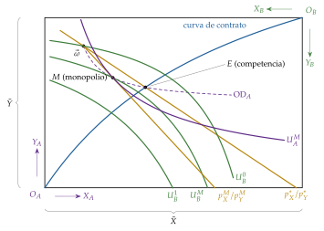
Fuente: elaboración propia a partir de Segura (1996, cap. 7).
Información privada y diseño de mecanismos. Hurwicz (1972) ve el mercado como un mecanismo más para asignar recursos con información dispersa y pregunta si hay alguno que sea eficiente, respete la participación voluntaria y en el que nadie gane mintiendo sobre sus preferencias: en una economía de intercambio con pocos agentes, no, y el mecanismo walrasiano es manipulable. El principio de revelación (Gibbard, 1973; Dasgupta, Hammond y Maskin, 1979; Myerson, 1979) permite buscar el mejor mecanismo entre los directos en los que decir la verdad es óptimo; es la base de la teoría del diseño de mecanismos (Premio Nobel de 2007 para Hurwicz, Maskin y Myerson) [ver tema 3.A.13] [ver tema 3.A.14]. La línea nace del debate sobre el cálculo económico en el socialismo: frente a la tesis de Mises (1920) de que sin mercados no hay precios con los que calcular, Lange (1936) propone que una oficina de planificación haga de subastador walrasiano, ajustando por tanteo los precios según los excesos de demanda, y Hayek (1945) responde que los precios no solo resuelven un sistema de ecuaciones: transmiten un conocimiento disperso, local y en parte tácito que ningún planificador puede reunir.
III.2.3. No convexidades y equilibrios múltiples
Hasta aquí hemos mantenido la convexidad de preferencias y tecnologías; pasamos ahora a quitarla.
La idea en palabras: la convexidad dice 2 cosas sencillas:
los consumidores prefieren las mezclas a los extremos (una cesta con algo de todo a otra con mucho de un bien y nada del otro);
en la producción no hay ventajas de tamaño (producir el doble cuesta al menos el doble).
Gracias a ella, cuando un precio cambia un poco, lo que cada agente quiere comprar o vender cambia también un poco, sin saltos. Y como la respuesta es suave, siempre hay un precio en el que la oferta y la demanda se encuentran.
Qué pasa sin ella: la respuesta a los precios da saltos, y el precio que vacía el mercado puede no existir: a un precio sobra demanda y, al subirlo un poco, sobra oferta, sin pasar por el punto en que se igualan. Ocurre por 2 vías:
Preferencias no convexas: el consumidor pasa de golpe de una cesta a otra muy distinta.
Rendimientos crecientes: si las empresas grandes producen más barato, la competencia perfecta no se sostiene: una empresa que toma el precio como dado o pierde dinero o querría crecer sin límite. El resultado es un monopolio natural [ver tema 3.A.17] o la competencia imperfecta [ver tema 3.B.6].
Qué se salva: si los agentes son muchos y pequeños, las no convexidades de los consumidores apenas se notan en el agregado (como los saltos de cada persona se compensan entre sí) y hay equilibrios casi exactos (Starr, 1969). Las de las empresas no se diluyen, porque la escala de una empresa no se reduce al crecer la economía.
Equilibrios múltiples: pueden darse incluso con convexidad (II.1.2), y cuando lo que le conviene a cada uno depende de lo que hacen los demás son la regla. La economía puede quedar atrapada en un equilibrio malo: nadie invierte porque nadie compra, y nadie compra porque nadie invierte. Son los fallos de coordinación, que enlazan la teoría con la macroeconomía keynesiana (Cooper y John, 1988) [ver tema 3.A.4].
En suma: la convexidad es lo que hace que los precios coordinen de forma suave y que el equilibrio exista y sea eficiente; sin ella hace falta otra teoría (competencia imperfecta, regulación, coordinación de expectativas).
Desarrollo técnico de las no convexidades.
Existencia: la convexidad sostiene la existencia (II.1.1) y el segundo teorema del bienestar (II.2.2). Con preferencias no convexas, la demanda es una correspondencia que no tiene valores convexos o una función discontinua; el exceso de demanda deja de ser continuo y el teorema de Brouwer (o el de Kakutani) no se puede aplicar. En la caja de intercambio, las curvas de oferta-demanda dan un salto y pueden no cortarse.
Rendimientos crecientes: con costes fijos o costes medios en U con un tramo decreciente, en el tramo en que el coste medio decrece el coste marginal está por debajo del medio, \(\mathrm{CMg}<\mathrm{CMe}\). Una empresa precio-aceptante que produce donde \(p=\mathrm{CMg}\) tiene pérdidas, \(B=(p-\mathrm{CMe})\,q<0\), y si el coste marginal también decrece querría producir sin límite: no hay equilibrio competitivo.
Lema de Shapley-Folkman: dados \(I\) conjuntos de \(\mathbb{R}^n\), todo punto de la envoltura convexa de su suma puede escribirse como suma de \(I\) puntos, uno de la envoltura convexa de cada conjunto, de los que como mucho \(n\) no están en el conjunto original. Starr (1969) lo usa para mostrar que el error que introducen las no convexidades de las preferencias está acotado con independencia del número de agentes (depende de \(n\), no de \(I\)), de modo que por persona tiende a 0 y existen equilibrios aproximados (Mas-Colell, Whinston y Green, 1995, párr. 17.I).
Complementariedades estratégicas: si la mejor respuesta de cada agente aumenta con la acción de los demás, puede haber varios equilibrios ordenados en el sentido de Pareto, y el mercado no tiene por qué llevar al mejor (Cooper y John, 1988).
III.3. Introducción del dinero en un modelo de equilibrio general competitivo (Patinkin)
Hasta aquí el modelo funciona sin dinero; pasamos ahora a preguntarnos si puede tenerlo y qué cambia si lo tiene.
a) Idea
Las funciones del dinero: el dinero se define por lo que hace [ver tema 3.A.35]:
es medio de cambio (con él se paga y se evita el trueque);
es depósito de valor (traslada poder de compra al futuro);
es unidad de cuenta (en él se miden los precios).
El dinero en el modelo estudiado hasta aquí: solo cumple la tercera función, y ni siquiera como dinero, sino como numerario: un bien cualquiera en el que se expresan los demás precios (I.2.4). Los bienes se intercambian en régimen de trueque, aunque organizado por el subastador, y los precios absolutos quedan indeterminados.
Por qué no tiene sitio: en el modelo de Arrow-Debreu no hay ninguna razón para querer dinero.
No da utilidad: un billete no se consume; solo vale por lo que permite comprar.
No hace falta como medio de cambio: el subastador casa a la vez todas las ofertas y demandas, y cada agente tiene una sola restricción presupuestaria; nadie tiene que buscar a alguien que quiera justo lo que él ofrece.
No hace falta como depósito de valor: todos los intercambios, presentes y futuros, se acuerdan de una vez en el momento inicial (III.4), así que no hay que guardar poder de compra para más adelante.
No queda nada que determinar: el sector real ya fija todos los precios relativos y las cantidades. El dinero solo podría determinar el nivel absoluto de los precios.
La pregunta: ¿se puede introducir un dinero fiduciario, papel sin valor intrínseco, sin romper la coherencia del modelo? ¿Y afecta el dinero a la economía real?
El antecedente: Mill (1844) ya advierte que en una economía monetaria la ley de Say puede fallar, porque un exceso de oferta general de bienes puede ir acompañado de un exceso de demanda de dinero.
2 conceptos previos, que se usan en todo el apartado y que la teoría monetaria emplea con el mismo sentido [ver tema 3.A.35]:
Dicotomía clásica: la economía se separa en 2 sectores que se resuelven por separado. El sector real (bienes y factores) determina los precios relativos y las cantidades; el sector monetario (oferta y demanda de dinero) determina solo el nivel absoluto de los precios, según la teoría cuantitativa. El dinero sería un velo: cambia las unidades en que se mide todo, pero no lo que ocurre.
Neutralidad del dinero: los cambios en la cantidad de dinero no tienen efectos reales: solo cambian el nivel de precios, no los precios relativos ni las cantidades. La superneutralidad va un paso más allá: tampoco los tienen los cambios en la tasa de crecimiento de la cantidad de dinero.
La diferencia: la dicotomía es una propiedad de la estructura del modelo (los 2 sectores se pueden separar); la neutralidad, una propiedad de su resultado. Patinkin muestra que la primera es insostenible, pero que la segunda se mantiene.
b) Modelo
i) Supuestos
Economía: intercambio puro con \(n\) bienes y dinero. El consumidor \(i\) tiene unas dotaciones de bienes \(\vec{\omega}_i\) y unos saldos monetarios iniciales \(\overline{M}_i\); la cantidad total de dinero, \(\overline{M}=\sum_i\overline{M}_i\), está dada.
Precios: los \(p_k\) son precios monetarios (euros por unidad de cada bien); el dinero es la unidad de cuenta y su precio es 1. \(P\) es un índice del nivel de precios.
Dinero: es fiduciario y, en la versión dicotómica de partida, no da utilidad; cada consumidor desea mantener unos saldos \(M^D_i\) al final del periodo.
ii) Desarrollo
Paso 1. La ley de Walras con dinero: cada consumidor gasta en bienes y en el dinero que quiere conservar lo que valen sus bienes y el dinero que tenía, \[\vec{p}\cdot\vec{x}_i+M^D_i=\vec{p}\cdot\vec{\omega}_i+\overline{M}_i .\] Sumando para todos los consumidores, el valor de los excesos de demanda de los \(n\) bienes más el exceso de demanda de dinero es idénticamente nulo: \[\sum_{k=1}^{n}p_k\,z_k(\vec{p})+\big(M^D(\vec{p})-\overline{M}\big)\equiv 0. \tag{20}\]
En palabras: ahora hay \(n+1\) mercados, y si en los de bienes sobra oferta por valor de 100 euros, en el de dinero sobra demanda por valor de 100 euros: los agentes venden bienes porque quieren tener más dinero.
Diferencia con la ley de Say: la ley de Walras no excluye un exceso de oferta general de bienes; solo dice que tiene su contrapartida en un exceso de demanda de dinero (I.2.4).
Paso 2. La dicotomía clásica en el modelo: se construye con 2 piezas.
Sector real: los excesos de demanda de bienes dependen solo de los precios relativos, como en el modelo sin dinero: son homogéneos de grado 0 en \(\vec{p}\) (postulado de homogeneidad).
Sector monetario: como el dinero no da utilidad, su demanda no sale de la optimización y se fija con una regla institucional de tipo Cambridge: cada consumidor desea mantener en dinero una proporción \(\varphi\) del valor de sus dotaciones (con beneficios nulos),34 \[M^D_i(\vec{p})=\varphi\,\vec{p}\cdot\vec{\omega}_i,\qquad M^D(\vec{p})=\varphi\,\vec{p}\cdot\sum_i\vec{\omega}_i .\]
El reparto de papeles: el sector real fijaría los precios relativos y el mercado de dinero, con \(M^D(\vec{p})=\overline{M}\), el nivel de precios.
Paso 3. Por qué la dicotomía es inválida (Lange, 1942a; Patinkin, 1965):
El experimento: sea \(\vec{p}^*\) un equilibrio y multipliquemos todos los precios por 2. Por el postulado de homogeneidad, los mercados de bienes siguen vaciándose; por la ley de Walras (20), el de dinero también. Pero la regla de Cambridge dice que la demanda de dinero se ha duplicado y la cantidad de dinero no ha cambiado: el mercado de dinero no se vacía.
La contradicción: las 2 piezas no pueden ser ciertas a la vez. Si los excesos de demanda de bienes solo dependen de los precios relativos, la ley de Walras obliga a que el exceso de demanda de dinero sea nulo a cualquier nivel de precios (es la identidad de Say), y el mercado de dinero no determina nada: el nivel de precios queda indeterminado.
En palabras: si, cuando los precios se duplican, un consumidor quiere tener el doble de dinero, para conseguirlo tiene que vender más bienes o comprar menos. Su demanda de bienes no puede ser la misma que antes: suponer que lo es resulta contradictorio.
Paso 4. La solución de Patinkin (1956): el efecto saldos reales. La demanda de bienes depende de los precios relativos y de los saldos reales, \(\overline{M}_i/P\), el poder de compra del dinero que se tiene (efecto saldos reales).
En palabras: si los precios suben, el dinero que tengo compra menos y soy más pobre en términos reales. Para reponer mis saldos, compro menos bienes. Ese exceso de oferta de bienes empuja los precios a la baja hasta que los saldos reales vuelven a ser los deseados. Si los precios son demasiado bajos, ocurre lo contrario.
Homogeneidad: los excesos de demanda son homogéneos de grado 0 en los precios y el dinero, pero no en los precios solos. Duplicar a la vez los precios y la cantidad de dinero no cambia nada real; duplicar solo los precios, sí.
Por qué la regla de Cambridge lleva al efecto saldos reales. Con la regla \(M^D_i=\varphi\,\vec{p}\cdot\vec{\omega}_i\), la restricción presupuestaria del paso 1 queda \[\vec{p}\cdot\vec{x}_i=(1-\varphi)\,\vec{p}\cdot\vec{\omega}_i+\overline{M}_i .\] Dividiendo por el índice de precios \(P\), el gasto real en bienes depende del valor real de las dotaciones y de \(\overline{M}_i/P\). Si se multiplican los precios por 2 y \(\overline{M}_i\) no cambia, el conjunto presupuestario se encoge: la demanda de bienes no puede ser homogénea de grado 0 en \(\vec{p}\). La propia regla de Cambridge, unida a la restricción presupuestaria, mete los saldos reales en la demanda de bienes: es la inconsistencia del paso 3 vista desde el consumidor. Solo si se duplican a la vez \(\vec{p}\) y \(\overline{M}_i\) queda el conjunto presupuestario igual, que es la homogeneidad del paso 4 (Patinkin, 1965).
iii) Implicaciones
El nivel de precios queda determinado: es el que hace que los saldos reales que se tienen, \(\overline{M}/P\), coincidan con los que se desean.
El dinero es neutral: duplicar \(\overline{M}\) duplica todos los precios de equilibrio sin cambiar los relativos ni la asignación real, porque los excesos de demanda son homogéneos de grado 0 en precios y dinero: si \((\vec{p}^*,\overline{M})\) es un equilibrio, también lo es \((2\vec{p}^*,2\overline{M})\).
Neutralidad sin dicotomía: el dinero no afecta al equilibrio real, pero los sectores real y monetario no se pueden separar: el efecto saldos reales, que actúa sobre la demanda de bienes, es lo que lleva el nivel de precios a su equilibrio. El dinero no importa en el equilibrio, pero sí en el proceso que lleva a él.
El equilibrio estacionario: Archibald y Lipsey (1958) precisan que, cuando cada uno ya ha ajustado sus saldos, la dicotomía vuelve a ser válida para los valores de equilibrio: el efecto saldos reales actúa en el ajuste.
La versión macroeconómica: el efecto saldos reales (o efecto Pigou-Patinkin) es el que, con precios flexibles, devuelve la economía al pleno empleo cuando cae la demanda, aunque el ajuste sea lento; es materia del debate sobre el desequilibrio y la síntesis neoclásica [ver tema 3.A.4] [ver tema 3.A.5].
c) Valoración
El problema de Hahn: Hahn (1965) muestra el fallo de fondo. Si el dinero no da utilidad ni presta ningún servicio en el modelo, solo vale porque los demás lo aceptan; y siempre es posible que nadie lo acepte. Siempre existe, por tanto, un equilibrio en el que el dinero no vale nada y la economía vuelve al trueque. Patinkin lo evita poniendo los saldos reales en la utilidad, que es suponer lo que había que explicar.
El reto: Hahn (1982) lo resume diciendo que el mayor reto que el dinero plantea al teórico es que el modelo de la economía mejor desarrollado no tiene sitio para él.
Las 4 vías modernas: la forma rigurosa de introducir el dinero es darle una función que el modelo de Arrow-Debreu, con todos los mercados abiertos a la vez en el momento inicial, no deja:
Depósito de valor entre generaciones (Samuelson, 1958): en una economía de generaciones solapadas los jóvenes trabajan y los viejos no, y los que aún no han nacido no pueden firmar contratos. Los jóvenes aceptan el dinero de los viejos a cambio de bienes porque esperan que la generación siguiente se lo acepte cuando ellos sean viejos: el dinero hace posible un intercambio que los mercados no pueden hacer [ver tema 3.A.29].
Restricción de liquidez previa al gasto (Clower, 1967): para comprar hay que tener el dinero antes. En la idea de Clower, el dinero compra bienes y los bienes compran dinero, pero los bienes no compran bienes; es el origen de los modelos de pago por anticipado (cash in advance).
Medio de cambio que surge de la búsqueda (Kiyotaki y Wright, 1989): los agentes se encuentran al azar, y el trueque exige una doble coincidencia (que el otro tenga lo que yo quiero y quiera lo que yo tengo). Un objeto que todos aceptan resuelve el problema, y se acepta porque se espera que los demás lo acepten: el dinero descansa en la confianza, y por eso puede haber equilibrios con dinero y sin él.
Dinero en la función de utilidad (Sidrauski, 1967): es una forma reducida. Resume los servicios de liquidez del dinero poniendo los saldos reales en la utilidad; no explica por qué se quiere dinero, pero da una demanda de dinero que crece con el consumo y cae con el tipo de interés nominal, su coste de oportunidad.
Las 4 vías, y lo que cada una implica para la demanda de dinero y la política monetaria, se desarrollan en la teoría de la demanda de dinero [ver tema 3.A.35].
III.4. Equilibrio general en condiciones de incertidumbre (Arrow, 1953, y Debreu, 1959)
El dinero no encontraba sitio porque en el modelo todo se acuerda en el momento inicial; pasamos ahora a ver cómo ese mismo supuesto permite introducir el tiempo y la incertidumbre.
a) Idea
Más bienes, no otra teoría: el tiempo y la incertidumbre caben en el modelo sin teoría nueva. Basta con definir los bienes no solo por sus características físicas, sino también por la fecha y el estado de la naturaleza (lo que puede ocurrir: que llueva o que no llueva) en que se entregan (Debreu, 1959, cap. 7).
El ejemplo: un paraguas cuando llueve y un paraguas cuando no llueve son bienes distintos, porque no se valoran igual, y tienen precios distintos. Es el enfoque de la preferencia por el estado [ver tema 3.A.10].
b) Modelo
i) Supuestos
Estados: \(n\) bienes físicos y \(S\) estados posibles mañana, \(s=1,\dots,S\), con probabilidades \(\pi_s\).
Bienes contingentes: un bien contingente es el derecho a recibir una unidad del bien \(k\) si ocurre el estado \(s\), con cantidad \(x_{ks}\) y precio \(p_{ks}\). Es un contrato del tipo «hoy te pago y mañana me entregas un paraguas si llueve; si no llueve, no me entregas nada». Se paga hoy, ocurra lo que ocurra mañana: funciona como una póliza de seguro.
Mercados completos: hay mercados para los \(n\cdot S\) bienes contingentes, todos abiertos hoy (mercados completos): se puede comprar o vender cualquier bien para cualquier estado.
Información y preferencias: todos saben qué estado ha ocurrido (información simétrica) y las preferencias sobre planes contingentes son convexas. No hace falta la utilidad esperada; si se usa, la aversión al riesgo basta para la convexidad.
ii) Desarrollo
El mismo modelo: formalmente es el modelo de I con \(n\cdot S\) bienes. Todo lo demostrado vale: existe el equilibrio, con precios de Arrow-Debreu \(p_{ks}\), y se cumplen los 2 teoremas del bienestar.
La condición de equilibrio: con utilidad esperada y un solo bien físico, todos los consumidores igualan su relación marginal de sustitución entre estados al cociente de los precios de estado: \[\frac{\pi_s\,u_i'(x_{is})}{\pi_{s'}\,u_i'(x_{is'})}=\frac{p_s}{p_{s'}}\qquad\text{para todo consumidor } i. \tag{22}\]
En palabras: cada consumidor valora una unidad más en el estado \(s\) frente a una en \(s'\) lo mismo que el mercado, y por tanto lo mismo que todos los demás. Ya no quedan ganancias de asegurarse unos a otros: el riesgo está repartido de forma eficiente.
Un caso sencillo: si no hay riesgo agregado (los recursos totales son los mismos en todos los estados), los precios de estado son proporcionales a las probabilidades, \(p_s/p_{s'}=\pi_s/\pi_{s'}\), y los consumidores aversos al riesgo consumen lo mismo en todos los estados: se aseguran por completo.
iii) Implicaciones
Por qué el modelo sigue valiendo: con mercados completos, la incertidumbre no cambia nada esencial. Quien quiere protegerse de un estado encuentra a alguien que acepta ese riesgo a un precio, igual que encuentra a quien le venda pan, y el resultado es eficiente.
Los títulos de Arrow: Arrow (1953) muestra que no hacen falta \(n\cdot S\) mercados hoy.
En lugar de comprar hoy un paraguas para el caso de que llueva, basta con comprar hoy un título que paga 1 euro si llueve (un título de Arrow) y, si llueve, comprar mañana el paraguas con ese euro en el mercado al contado.
Bastan \(S\) títulos hoy y los \(n\) mercados al contado que se abren en el estado que ocurra: \(n+S\) mercados en lugar de \(n\cdot S\) (con 1.000 bienes y 10 estados, 1.010 mercados en lugar de 10.000), si los agentes prevén bien los precios futuros (Arrow, 1964).
Mercados que se suceden: Radner (1972) formaliza ese equilibrio de planes, precios y expectativas de precios en una sucesión de mercados (al contado y de futuros, que se reabren): con mercados financieramente completos (tantos activos independientes como estados) da las mismas asignaciones que Arrow-Debreu.
c) Extensiones: mercados incompletos y tiempo
Mercados incompletos: si hay menos activos independientes que estados, no es posible asegurarse contra todo lo que puede pasar (por ejemplo, contra perder el empleo o contra una mala cosecha en el propio país). Entonces el equilibrio de Radner:
no es eficiente en general, ni siquiera restringidamente: un planificador que solo pudiera usar los mismos activos podría mejorar a todos, porque los agentes no tienen en cuenta cómo sus decisiones cambian los precios a los que otros pueden asegurarse (Hart, 1975; J. D. Geanakoplos y Polemarchakis, 1986);
puede no existir con activos reales (que pagan en bienes) (Hart, 1975);
está indeterminado con activos nominales (que pagan en dinero): lo que un activo compra depende del nivel de precios en cada estado, que nada fija, y hay un continuo de equilibrios reales, de dimensión \(S-1\), que crece con el número de estados (Balasko y Cass, 1989; J. Geanakoplos y Mas-Colell, 1989).
Con mercados completos el equilibrio vuelve a ser determinado (un número finito de equilibrios, como en las economías regulares de II.1.2) y eficiente: cuantos más mercados, más determinado está el equilibrio.
Tiempo sin fin: con un horizonte infinito y agentes que nacen y mueren (generaciones solapadas), el equilibrio competitivo puede ser ineficiente incluso con mercados completos en cada periodo (ineficiencia dinámica) [ver tema 3.A.29].
d) Evidencia empírica
Los mercados son incompletos: apenas hay mercados para asegurar la renta del trabajo, el capital humano o el PIB de un país, y Shiller (1993) propone crearlos.
e) Valoración
El modelo exige más mercados de los que hay.35 Los costes de transacción y la información asimétrica (selección adversa, riesgo moral) explican por qué faltan mercados (Arrow, 1963) [ver tema 3.A.13], y su ausencia justifica intervenciones como los seguros obligatorios o la protección social.
III.5. Modelos de equilibrio general computable (Scarf)
Una vez vistos los límites teóricos del modelo, pasamos a cómo se usa en la práctica.
Los modelos de equilibrio general computable (MEGC; CGE en inglés) resuelven numéricamente el equilibrio walrasiano de una economía con muchos sectores, factores, hogares y países. Los hacen posibles 2 avances:
Metodología (Shoven y Whalley, 1992):
se eligen formas funcionales (CES, Leontief) [ver tema 3.A.11];
se calibran sus parámetros para que el modelo reproduzca un año base recogido en una matriz de contabilidad social, que amplía las tablas input-output [ver tema 3.A.31];
se simula la política (arancel, impuesto, precio del carbono) comparando el nuevo equilibrio con el de referencia: es estática comparativa (anexo E) a gran escala.36
Usos:
Comercio internacional: uno de sus primeros usos fue medir el efecto de las barreras comerciales.
La evaluación ex ante del TLCAN (NAFTA) dio lugar a una amplia literatura, que acabó revelando que estos modelos infravaloraron mucho el aumento del comercio (Kehoe, 2005).
Su sucesor, el T-MEC (USMCA), se evaluó con un modelo de equilibrio general: +0,35 % del PIB real de EE. UU. y unos 176.000 empleos (United States International Trade Commission, 2019); en julio de 2026, EE. UU. no aceptó prorrogarlo y el acuerdo pasó a revisiones anuales (Office of the United States Trade Representative, 2026).
El estudio de equilibrio general que pidió la Comisión para el TTIP estimaba unas ganancias para la UE de unos 119.000 millones de euros al año en el escenario más ambicioso (Francois et al., 2013), pero las negociaciones se pararon en 2016 y en 2019 el Consejo dio por obsoletas sus directrices (Consejo de la Unión Europea, 2019).
Hoy es la herramienta habitual de la Comisión: el acuerdo UE-Mercosur (firmado en enero de 2026 y aplicado provisionalmente desde mayo) se evaluó con el modelo dinámico GTAP (Comisión Europea, Dirección General de Comercio, 2025; Aguiar et al., 2025).
Política climática: destaca el modelo DICE de William Nordhaus (Premio Nobel de 2018), cuya versión actual es la DICE-2023 (The Nobel Prize, 2018; Barrage y Nordhaus, 2024); no es un MEGC multisectorial, sino un modelo de evaluación integrada de crecimiento óptimo, y se usa para evaluar, por ejemplo, un impuesto sobre el carbono [ver tema 3.B.31].
Macroeconomía: los modelos de equilibrio general dinámicos y estocásticos son la versión agregada e intertemporal del mismo programa [ver tema 3.A.6].
En España, el Ministerio de Economía y Hacienda desarrolló en 2008 el modelo REMS, con la Universidad de Valencia, la Fundación Rafael del Pino y BBVA (Boscá et al., 2010).
Su versión estimada, EREMS (Boscá et al., 2020), es la que usa el Observatorio sobre el Ciclo Económico en España de BBVA Research, Fedea y la Fundación Rafael del Pino: cuando la economía recibe perturbaciones, la respuesta de las variables endógenas permite descomponer el crecimiento en sus causas.
A finales de 2025 las perturbaciones de demanda sumaban unos 2,6 puntos al crecimiento del PIB por persona en edad de trabajar y las de oferta (sobre todo la escasez de vivienda) restaban unos 2,1 (Boscá et al., 2026).37
Valoración: los resultados dependen de las elasticidades y de los cierres macroeconómicos elegidos, y la unicidad del equilibrio calculado no está garantizada (II.1.2). Aun así, son la forma de llevar la teoría del equilibrio general a la evaluación de políticas.
Recapitulando: el equilibrio walrasiano resiste que se quite el subastador si los agentes son muchos (núcleo), pero no el poder de mercado, las no convexidades, el dinero sin valor intrínseco ni los mercados incompletos; aun así, sigue siendo la referencia con la que se evalúan las políticas.
Conclusión
Recapitulación (ideas clave):
En conclusión, la teoría del equilibrio general responde a la pregunta del principio en 3 pasos. Con agentes precio-aceptantes y preferencias y tecnologías convexas, el sistema de precios puede coordinar todos los mercados a la vez: existe un vector de precios que los vacía (I y II.1).
Ese equilibrio no tiene por qué ser único ni estable, porque la agregación borra casi todas las propiedades de la demanda individual (teorema de Sonnenschein-Mantel-Debreu), pero es eficiente si los mercados son completos y competitivos (II.2).
Y el modelo resiste bien que se relajen algunos supuestos (con muchos agentes, el núcleo converge al equilibrio walrasiano) y peor otros: poder de mercado, no convexidades, mercados incompletos y dinero, que necesita una función que el modelo no le da (III). Así, el trabajo de Walras puede entenderse como la formalización de la «mano invisible» de Smith.
Relevancia: es el lenguaje común de la teoría económica. La macroeconomía actual es equilibrio general dinámico y estocástico [ver tema 3.A.6] [ver tema 3.A.42], y De Vroey (2004) lee su historia como la sustitución de modelos de equilibrio general simplificados de tipo marshalliano, como el IS-LM, por modelos walrasianos. También lo son la teoría del comercio internacional [ver tema 3.B.5] y la economía del clima [ver tema 3.B.31], y los modelos computables se usan para evaluar acuerdos comerciales, impuestos y políticas climáticas.
Extensiones y relación con otras partes del temario:
El equilibrio parcial sigue siendo útil para estudiar un mercado concreto con pocas conexiones con el resto; para fenómenos que afectan a muchos mercados a la vez, como un tratado comercial, hace falta el equilibrio general [ver tema 3.A.16].
Los fallos de mercado (poder de mercado, externalidades, bienes públicos) [ver tema 3.A.23] y la información asimétrica [ver tema 3.A.13] parten de los supuestos de este modelo para ver qué pasa cuando no se cumplen.
El diseño de mecanismos (Hurwicz, Myerson) y el debate del cálculo socialista (Lange, Hayek) preguntan qué mecanismo asigna bien con información dispersa, y la elección del óptimo social, [ver tema 3.A.24].
La teoría de la negociación (Nash, Rubinstein) elige entre los acuerdos que Edgeworth deja abiertos [ver tema 3.A.14].
La teoría de la demanda de dinero da al dinero la función que aquí le falta [ver tema 3.A.35].
El modelo ha sido criticado:
la escuela austriaca ve la competencia como un proceso de descubrimiento y no como un estado;
los teóricos del desequilibrio (Clower, Leijonhufvud) estudian el comercio a precios falsos [ver tema 3.A.4];
Kirman (1992) subraya los problemas de agregación;
la economía conductual, con Thaler (Premio Nobel de 2017), los límites de la racionalidad (The Nobel Prize, 2017);
la macroeconomía financiera, las restricciones de crédito que el modelo ignora.
Opinión: el equilibrio general competitivo no describe ninguna economía real, ni lo pretende: un modelo sirve precisamente porque deja cosas fuera. Su valor es servir de referencia exacta, porque dice qué tendría que cumplir una economía para que la mano invisible funcione, y cada supuesto que no se cumple señala dónde puede fallar y, por tanto, dónde puede tener sentido la intervención pública.
Idea final: volviendo a Bastiat, París se abastece sin que nadie lo planifique porque los precios coordinan: aunque cada uno arrime el ascua a su sardina, los precios consiguen que se asen todas. Millones de decisiones descentralizadas pueden encajar sin que sobre ni falte nada, pero solo con supuestos exigentes: lo que el modelo enseña no es que el mercado siempre funcione, sino por qué funciona cuando lo hace.
A. Anexo: el modelo con \(I\) consumidores, \(J\) empresas y \(n\) bienes
Consumidores \(i=1,\dots,I\): preferencias sobre cestas \(\vec{x}_i\in\mathbb{R}^n_+\), dotaciones \(\vec{\omega}_i\in\mathbb{R}^n_+\) (los factores son bienes más) y participaciones \(\theta_{ij}\geq 0\) en los beneficios de cada empresa, con \(\sum_i\theta_{ij}=1\). Cada uno resuelve \[\begin{array}{rl}\displaystyle \max_{\vec{x}_i} & \displaystyle U_i(\vec{x}_i) \\ \text{s.a.} & \vec{p}\cdot\vec{x}_i\leq\overline{W}_i(\vec{p})=\vec{p}\cdot\vec{\omega}_i+\sum_{j=1}^{J}\theta_{ij}B_j(\vec{p}) \\ & \vec{x}_i\geq\vec{0}\end{array}\] de donde salen las demandas \(\vec{x}_i\big(\vec{p},\overline{W}_i(\vec{p})\big)\).
Empresas \(j=1,\dots,J\): conjunto de producción \(\mathcal{Y}_j\subset\mathbb{R}^n\) de planes netos \(\vec{y}_j\) (componentes negativos, factores; positivos, productos) [ver tema 3.A.11]. Cada una resuelve \[B_j(\vec{p})=\begin{array}{rl}\displaystyle \max_{\vec{y}_j} & \displaystyle \vec{p}\cdot\vec{y}_j \\ \text{s.a.} & \vec{y}_j\in\mathcal{Y}_j\end{array}\] de donde salen las ofertas netas \(\vec{y}_j(\vec{p})\) y la función de beneficios \(B_j(\vec{p})\) [ver tema 3.A.12].
Exceso de demanda y equilibrio: el exceso de demanda agregado es (9), y un equilibrio walrasiano es un \(\vec{p}^*\geq\vec{0}\) con \(\vec{z}(\vec{p}^*)\leq\vec{0}\) y \(\vec{p}^*\cdot\vec{z}(\vec{p}^*)=0\) (11). El 2×2×2×2 del cuerpo es el caso \(I=2\), \(J=2\) y \(n=4\), con los consumidores dueños solo de los factores (Mas-Colell, Whinston y Green, 1995, cap. 17).
A.1. La maximización del beneficio en 2 etapas
Problema: el de la empresa (2) puede resolverse en 2 etapas [ver tema 3.A.12]:
la forma más barata de obtener cada cantidad \(q\), que da la función de costes (eficiencia económica), \[C(\vec{w},q)=\begin{array}{rl}\displaystyle \min_{\vec{z}} & \displaystyle \vec{w}\cdot\vec{z} \\ \text{s.a.} & F(\vec{z})\geq q \\ & \vec{z}\geq\vec{0}\end{array}\]
la cantidad que maximiza el beneficio, \[B(p,\vec{w})=\begin{array}{rl}\displaystyle \max_{q} & \displaystyle p\,q-C(\vec{w},q) \\ \text{s.a.} & q\geq 0\end{array}\]
Condición de primer orden: \(p=\mathrm{CMg}(\vec{w},q)\), que es la función inversa de oferta; la empresa solo produce si \(p\geq\min \mathrm{CMe}\) (si no, la inacción es mejor).
Condición de segundo orden: \(\partial \mathrm{CMg}/\partial q\geq 0\): la empresa produce en el tramo creciente del coste marginal.
Resultado: la oferta \(q(p,\vec{w})\) y el beneficio \(B(p,\vec{w})\) (gráfico 9).
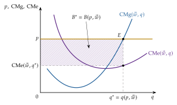
Fuente: elaboración propia a partir de Mas-Colell, Whinston y Green (1995, cap. 5).
B. Anexo: existencia, unicidad y estabilidad del equilibrio
Este anexo recoge, paso a paso, las 3 demostraciones cuya intuición se cuenta en el apartado II.1:
la existencia con el teorema de Brouwer (B.1);
la unicidad por el axioma débil y por los sustitutivos brutos (B.2);
la estabilidad del tanteo con la distancia al equilibrio (B.3).
B.1. Demostración de la existencia
Los teoremas del punto fijo
Qué son: los teoremas del punto fijo dan condiciones para que una aplicación de un conjunto en sí mismo deje al menos un elemento donde está: un punto \(\vec{p}^*\) con \(\vec{f}(\vec{p}^*)=\vec{p}^*\).
Por qué sirven aquí: si se encuentra una aplicación que imite al subastador (sube los precios con exceso de demanda y baja los de exceso de oferta), un vector de precios que esa aplicación no cambia es uno en el que nadie tiene motivo para cambiar ningún precio: un equilibrio. Probar que existe un punto fijo es probar que existe un equilibrio.
Brouwer frente a Kakutani:
teorema de Brouwer (Brouwer, 1911): si \(\Delta\subset\mathbb{R}^n\) es no vacío, compacto (cerrado y acotado) y convexo, y \(\vec{f}:\Delta\to\Delta\) es continua, existe \(\vec{p}^*\in\Delta\) con \(\vec{f}(\vec{p}^*)=\vec{p}^*\). Sirve cuando las demandas y las ofertas son funciones (preferencias y tecnologías estrictamente convexas);
teorema de Kakutani (Kakutani, 1941): lo generaliza a correspondencias (a cada punto le corresponde un conjunto) hemicontinuas superiormente y con valores no vacíos y convexos. Hace falta cuando la convexidad no es estricta y la demanda o la oferta tienen varios valores a unos precios dados (por ejemplo, con rendimientos constantes). Es el que usan Arrow y Debreu (1954).
Aquí se sigue la prueba con Brouwer, que es la más sencilla (Mas-Colell, Whinston y Green, 1995, párr. 17.C).
Lo que hay que comprobar:
que existe un conjunto de precios no vacío, cerrado, acotado y convexo (paso 1);
que existe una función continua de ese conjunto en sí mismo (paso 2);
entonces Brouwer da un punto fijo, y queda probar que ese punto fijo es un equilibrio (paso 3).
Supuestos
Sobre el exceso de demanda: \(\vec{z}\) continua, homogénea de grado 0 y con \(\vec{p}\cdot\vec{z}(\vec{p})=0\) para todo \(\vec{p}\) (ley de Walras).38
Velocidades de ajuste: \(\kappa_k>0\) para cada bien \(k=1,\dots,n\).
Paso 1: el conjunto de precios
La normalización: los precios solo son no negativos, \(p_k\geq 0\): están acotados por abajo, pero no por arriba. Como \(\vec{z}\) es homogénea de grado 0, podemos dividir todos los precios por su suma sin cambiar ningún exceso de demanda, \(\vec{z}(\vec{p})=\vec{z}\big(\vec{p}/\sum_lp_l\big)\), y trabajar con precios que suman 1: el símplice (13), \(\Delta=\big\{\vec{p}\in\mathbb{R}^n_+:\ \sum_kp_k=1\big\}\).
Sus propiedades:
no vacío: contiene, por ejemplo, \((1/n,\dots,1/n)\);
acotado: \(0\leq p_k\leq 1\) para todo \(k\);
cerrado: incluye su frontera, los vectores con algún precio nulo (está definido con igualdades y desigualdades no estrictas);
convexo: si \(\vec{p}\) y \(\vec{p}'\) están en \(\Delta\) y \(\lambda\in[0,1]\), \(\lambda\vec{p}+(1-\lambda)\vec{p}'\) tiene componentes no negativas que suman \(\lambda+(1-\lambda)=1\).
Paso 2: la función del subastador
La regla: el subastador canta unos precios \(\vec{p}\in\Delta\), observa los excesos de demanda y propone unos nuevos:
si \(z_k(\vec{p})>0\), suma al precio un múltiplo \(\kappa_k\) del exceso de demanda y el precio sube;
si \(z_k(\vec{p})=0\), deja el precio como está;
si \(z_k(\vec{p})<0\), el precio baja.
Es decir, \(p_k+\kappa_k\,z_k(\vec{p})\).
Primer arreglo, precios no negativos: la resta podría dar precios negativos, así que se toma \(\max\{0,\ p_k+\kappa_k\,z_k(\vec{p})\}\). En un bien libre, \(z_k\leq 0\) a cualquier precio, y la regla baja su precio ronda tras ronda hasta que el máximo lo detiene en 0.
Segundo arreglo, volver al símplice: los nuevos precios no tienen por qué sumar 1, así que se dividen por su suma. Queda la aplicación (14), \[f_k(\vec{p})=\frac{\max\{0,\ p_k+\kappa_k\,z_k(\vec{p})\}}{\sum_{l=1}^{n}\max\{0,\ p_l+\kappa_l\,z_l(\vec{p})\}},\qquad k=1,\dots,n.\]
El denominador es positivo: si fuera \(p_l+\kappa_lz_l(\vec{p})\leq 0\) para todo \(l\), multiplicando cada desigualdad por \(p_l/\kappa_l\geq 0\) y sumando, \[\sum_l\frac{p_l^2}{\kappa_l}+\underbrace{\vec{p}\cdot\vec{z}(\vec{p})}_{=0\ \text{(Walras)}}=\sum_l\frac{p_l^2}{\kappa_l}\leq 0,\] imposible, porque los precios suman 1 y alguno es positivo. Así que \(\vec{f}\) está bien definida en todo \(\Delta\).
\(\vec{f}\) es continua: \(\vec{z}\) es continua, el máximo de funciones continuas es continuo y el cociente de funciones continuas con denominador positivo también.
\(\vec{f}\) lleva \(\Delta\) en sí mismo: sus componentes son no negativas (por el máximo) y suman 1 (por la división).
Aplicación del teorema: se cumplen todas las condiciones de Brouwer, de modo que existe un \(\vec{p}^*\in\Delta\) con \(\vec{f}(\vec{p}^*)=\vec{p}^*\): \[p^*_k=\frac{\max\{0,\ p^*_k+\kappa_k\,z_k(\vec{p}^*)\}}{\mu},\qquad \mu\equiv\sum_{l=1}^{n}\max\{0,\ p^*_l+\kappa_l\,z_l(\vec{p}^*)\}>0,\qquad k=1,\dots,n. \tag{25}\]
Paso 3: el punto fijo es un equilibrio
Hay que comprobar que \(\vec{p}^*\) cumple la definición (11): exceso de demanda no positivo en los bienes con precio nulo y nulo en los de precio positivo. Multiplicando (25) por \(\mu\), \(\max\{0,\ p^*_k+\kappa_kz_k(\vec{p}^*)\}=\mu\,p^*_k\) para todo \(k\).
Bienes con precio nulo (\(p^*_k=0\)): la igualdad queda \(\max\{0,\ \kappa_kz_k(\vec{p}^*)\}=0\), lo que exige \(\kappa_kz_k(\vec{p}^*)\leq 0\) y, como \(\kappa_k>0\), \(z_k(\vec{p}^*)\leq 0\). Es la condición de equilibrio de un bien libre.
Bienes con precio positivo (\(p^*_k>0\)): el segundo miembro, \(\mu p^*_k\), es positivo, así que el máximo es el segundo término: \(p^*_k+\kappa_kz_k(\vec{p}^*)=\mu\,p^*_k\), es decir, \[z_k(\vec{p}^*)=(\mu-1)\,\frac{p^*_k}{\kappa_k}.\] Falta probar que \(\mu=1\).
La ley de Walras cierra el argumento: multiplicando la última igualdad por \(p^*_k\) y sumando para los bienes con precio positivo (los de precio nulo no aportan nada a \(\vec{p}^*\cdot\vec{z}(\vec{p}^*)\)), \[\underbrace{\vec{p}^*\cdot\vec{z}(\vec{p}^*)}_{=0\ \text{(Walras)}}=(\mu-1)\underbrace{\sum_{k:\,p^*_k>0}\frac{(p^*_k)^2}{\kappa_k}}_{>0}.\] El primer miembro es 0 y la suma es positiva, así que \(\mu=1\) y \(z_k(\vec{p}^*)=0\) en todos los bienes con precio positivo: son bienes económicos con su mercado vaciado.
Conclusión: \(\vec{p}^*\) cumple (11): existe un equilibrio general competitivo.∎
Qué no prueba. La prueba no dice que el tanteo converja a \(\vec{p}^*\): solo que hay un vector que el subastador deja donde está. Si los precios empiezan en otro sitio, nada asegura que lleguen a él. La convergencia es la pregunta de la estabilidad (II.1.3 y B.3). Tampoco dice cuántos puntos fijos hay (B.2) ni cómo calcularlos: eso lo resuelve el algoritmo de H. Scarf (1967) (III.5).
B.2. Unicidad del equilibrio
Las 2 condiciones suficientes del apartado II.1.2 se demuestran por reducción al absurdo: se supone que hay 2 equilibrios distintos y se llega a una contradicción.
Unicidad por el axioma débil de la preferencia revelada
Intuición: si la demanda de mercado se comporta como la de un único consumidor coherente, 2 equilibrios distintos obligarían a ese consumidor a elegir la cesta \(A\) pudiendo pagar la \(B\) y la \(B\) pudiendo pagar la \(A\), y eso es justo lo que el axioma débil prohíbe.
Supuestos
Notación: \(\vec{x}(\vec{p})\) es la demanda de mercado de los consumidores (7), \(\vec{y}(\vec{p})=\sum_j\vec{y}_j(\vec{p})\) la oferta neta de las empresas y \(\vec{\omega}=\sum_i\vec{\omega}_i\) la dotación total. Por la ley de Walras, el gasto total de los consumidores es su renta total: \(\vec{p}\cdot\vec{x}(\vec{p})=\vec{p}\cdot\big(\vec{\omega}+\vec{y}(\vec{p})\big)\).
Axioma débil agregado: la demanda de mercado cumple el axioma débil como si fuera la de un solo consumidor: si \(\vec{x}(\vec{p}^A)\neq\vec{x}(\vec{p}^B)\) y \(\vec{p}^A\cdot\vec{x}(\vec{p}^B)\leq\vec{p}^A\cdot\vec{x}(\vec{p}^A)\) (a los precios \(\vec{p}^A\) se elige la cesta \(A\) pudiendo pagar la \(B\)), entonces \(\vec{p}^B\cdot\vec{x}(\vec{p}^A)>\vec{p}^B\cdot\vec{x}(\vec{p}^B)\) (a los precios \(\vec{p}^B\) la cesta \(A\) no se puede pagar).
Empresas maximizadoras: a cada vector de precios, el plan elegido da al menos tanto beneficio como cualquier otro plan posible: \(\vec{p}\cdot\vec{y}(\vec{p})\geq\vec{p}\cdot\vec{y}'\) para todo \(\vec{y}'\) factible.
Equilibrios con todos los precios positivos (condición de frontera): en cada equilibrio, \(\vec{x}(\vec{p})=\vec{\omega}+\vec{y}(\vec{p})\).
Demostración
Hipótesis de partida: sean \(\vec{p}^A\) y \(\vec{p}^B\) 2 equilibrios con consumos de mercado distintos, \(\vec{x}^A\neq\vec{x}^B\), y producciones \(\vec{y}^A\) e \(\vec{y}^B\). Por ser equilibrios, \(\vec{x}^A=\vec{\omega}+\vec{y}^A\) y \(\vec{x}^B=\vec{\omega}+\vec{y}^B\).
A los precios \(\vec{p}^A\), la cesta \(B\) era asequible: como las empresas maximizan el beneficio a los precios \(\vec{p}^A\), \(\vec{p}^A\cdot\vec{y}^A\geq\vec{p}^A\cdot\vec{y}^B\). Sumando \(\vec{p}^A\cdot\vec{\omega}\) a los 2 lados, \[\vec{p}^A\cdot\vec{x}^B=\vec{p}^A\cdot(\vec{\omega}+\vec{y}^B)\leq\vec{p}^A\cdot(\vec{\omega}+\vec{y}^A)=\vec{p}^A\cdot\vec{x}^A .\] Los consumidores eligieron \(\vec{x}^A\) pudiendo pagar \(\vec{x}^B\): \(\vec{x}^A\) se revela preferida a \(\vec{x}^B\).
El axioma débil exige que a los precios \(\vec{p}^B\) la cesta \(A\) no sea asequible: \(\vec{p}^B\cdot\vec{x}^A>\vec{p}^B\cdot\vec{x}^B\).
Pero las empresas la hacen asequible: maximizando el beneficio a los precios \(\vec{p}^B\), \(\vec{p}^B\cdot\vec{y}^B\geq\vec{p}^B\cdot\vec{y}^A\), y sumando \(\vec{p}^B\cdot\vec{\omega}\), \[\vec{p}^B\cdot\vec{x}^A=\vec{p}^B\cdot(\vec{\omega}+\vec{y}^A)\leq\vec{p}^B\cdot(\vec{\omega}+\vec{y}^B)=\vec{p}^B\cdot\vec{x}^B ,\] que contradice el paso 3.
Conclusión: no puede haber 2 equilibrios con consumos distintos: la asignación de equilibrio es única. Con preferencias diferenciables y una asignación interior, los precios relativos son las RMS comunes de esa asignación (12), así que también son únicos.∎
Versión con el exceso de demanda
Enunciado: \(\vec{z}\) cumple el axioma débil si, para cualesquiera \(\vec{p}^0,\vec{p}^1\) con \(\vec{z}(\vec{p}^0)\neq\vec{z}(\vec{p}^1)\) y \(\vec{p}^0\cdot\vec{z}(\vec{p}^1)\leq 0\), se tiene \(\vec{p}^1\cdot\vec{z}(\vec{p}^0)>0\) (Mas-Colell, Whinston y Green, 1995, párr. 17.F).
Consecuencia: con \(\vec{p}^1=\vec{p}^*\) de equilibrio (\(\vec{z}(\vec{p}^*)=\vec{0}\)) y cualquier \(\vec{p}^0\) que no lo sea, la premisa se cumple (\(\vec{p}^0\cdot\vec{0}=0\)) y se obtiene \(\vec{p}^*\cdot\vec{z}(\vec{p}^0)>0\), la condición (16). Si \(\vec{p}^0\) es otro equilibrio, el axioma no dice nada (los 2 excesos de demanda son \(\vec{0}\)): por eso, en esta versión, solo asegura que el conjunto de equilibrios es convexo; con equilibrios aislados (economía regular), es un punto.
Valoración
El supuesto es muy fuerte: cada consumidor cumple el axioma débil [ver tema 3.A.8], pero la demanda de mercado no lo hereda, porque los cambios de precios redistribuyen la renta entre consumidores que gastan de forma distinta (I.2.2).
Cuándo se cumple: una condición suficiente es que las preferencias sean homotéticas (curvas de Engel rectas por el origen: elasticidad renta unitaria) y las dotaciones, proporcionales, de modo que la distribución relativa de la renta no cambie con los precios (Mas-Colell, Whinston y Green, 1995, párr. 4.C y §17.F). Es pedir que la economía se comporte como un consumidor representativo.
Unicidad por los sustitutivos brutos
Intuición: si hubiera 2 equilibrios, el bien que menos se encarece al pasar de uno a otro vería a todos los demás encarecerse más que él; como todos son sustitutivos suyos, su demanda subiría y su mercado dejaría de vaciarse.
Supuestos
Sobre el exceso de demanda: continuo, homogéneo de grado 0 y con la ley de Walras, con todos los precios de equilibrio positivos (condición de frontera), de modo que en cada equilibrio \(\vec{z}=\vec{0}\).
Sustitutivos brutos (15): \(\partial z_k(\vec{p})/\partial p_l>0\) para todo \(l\neq k\) y todo \(\vec{p}\). Al cambiar los precios cambian las demandas por los efectos sustitución y renta (también el de la dotación, I.2.2); la condición pide que el resultado neto sea siempre que encarecer un bien aumente la demanda de todos los demás.
Demostración
Hipótesis de partida: sean \(\vec{p}^A\) y \(\vec{p}^B\) 2 equilibrios no proporcionales (si fueran proporcionales, serían el mismo en precios relativos). Los 2 cumplen \(\vec{z}(\vec{p}^A)=\vec{z}(\vec{p}^B)=\vec{0}\).
Elegir el bien que menos se encarece: sea \(k\) el bien con el menor cociente \(p^B_l/p^A_l\), y \(m=p^B_k/p^A_k\) ese cociente. Por la homogeneidad de grado 0, \(\vec{p}'=\vec{p}^B/m\) es también un equilibrio, y cumple: \[p'_k=p^A_k,\qquad p'_l=\frac{p^B_l}{m}\geq p^A_l\quad\text{para todo }l\neq k,\] con alguna desigualdad estricta, porque \(\vec{p}^A\) y \(\vec{p}^B\) no son proporcionales. Es decir: medido así, el bien \(k\) cuesta lo mismo en los 2 equilibrios y todos los demás cuestan igual o más.
Su exceso de demanda sube: pasemos de \(\vec{p}^A\) a \(\vec{p}'\) subiendo uno a uno los precios de los demás bienes, sin tocar \(p_k\). Cada subida aumenta \(z_k\) (estrictamente si el precio sube de verdad) por la sustitución bruta, y ninguna lo reduce. Por tanto, \[z_k(\vec{p}')>z_k(\vec{p}^A)=0 .\]
Contradicción: \(\vec{p}'\) es un equilibrio con \(p'_k>0\), así que debería ser \(z_k(\vec{p}')=0\).
Conclusión: no puede haber 2 equilibrios no proporcionales: el vector de precios relativos de equilibrio es único.∎
Con 2 bienes. Sea \(\vec{p}^A\) un equilibrio, con \(z_X(\vec{p}^A)=z_Y(\vec{p}^A)=0\) y, por la ley de Walras, \(p^A_X\cdot 0+p^A_Y\cdot 0=0\). Si baja \(p_Y\) sin tocar \(p_X\), el bien \(X\) se encarece en términos relativos y, por la sustitución bruta, cae su demanda: \(z_X<0\). La ley de Walras, \(p_Xz_X+p_Yz_Y=0\), exige entonces \(z_Y>0\): el mercado de \(Y\) no se vacía y el nuevo vector no es de equilibrio. Lo mismo si sube \(p_Y\), con los signos al revés. Es el argumento del gráfico 5: con sustitutivos brutos, \(z_X(p_X,1)\) es siempre decreciente y solo corta el eje una vez.
Valoración
Ventaja: no exige que la economía se comporte como un consumidor representativo, y la misma condición da la estabilidad global del tanteo (B.3) y el signo de la estática comparativa (Mas-Colell, Whinston y Green, 1995, párr. 17.F y §17.G).
Límite: es muy restrictiva. Exige que los efectos sustitución dominen a los efectos renta en todos los bienes y a todos los precios, y excluye los complementarios, que son la regla en muchos mercados (el contraejemplo de Scarf, con bienes complementarios, tiene un equilibrio único pero inestable). Y, por el teorema SMD, nada en la teoría del consumidor obliga a que se cumpla.
B.3. Estabilidad del tanteo
Intuición: se busca una medida de lo lejos que están los precios del equilibrio que el tanteo reduzca siempre. Si existe, los precios no pueden quedarse dando vueltas ni alejarse: acaban en el equilibrio. Es el segundo método de Liapunov para sistemas dinámicos, que no exige resolver las ecuaciones del tanteo.
Supuestos
Tanteo (17): \(\dot p_k=\kappa_k\,z_k(\vec{p})\), con \(\kappa_k>0\), desde un vector de precios inicial \(\vec{p}(0)\) positivo.
Exceso de demanda: continuo, homogéneo de grado 0 y con la ley de Walras.
Condición de estabilidad: hay un equilibrio \(\vec{p}^*\) tal que \(\vec{p}^*\cdot\vec{z}(\vec{p})>0\) para todo \(\vec{p}\) no proporcional a \(\vec{p}^*\), la condición (16). Arrow, Block y Hurwicz (1959) prueban que se cumple si todos los bienes son sustitutivos brutos; también se cumple con el axioma débil agregado (Mas-Colell, Whinston y Green, 1995, párr. 17.H).
Demostración
El tanteo no cambia el «tamaño» de los precios: por la ley de Walras, \[\frac{d}{dt}\Bigg[\frac12\sum_{k}\frac{p_k(t)^2}{\kappa_k}\Bigg]=\sum_k\frac{p_k\,\dot p_k}{\kappa_k}=\sum_kp_k\,z_k(\vec{p})=\vec{p}\cdot\vec{z}(\vec{p})=0 .\] Los precios se mueven sobre una «esfera» (ponderada por los \(\kappa_k\)) fija: no pueden irse a infinito ni a 0 todos a la vez. Por la homogeneidad, elegimos el \(\vec{p}^*\) de equilibrio sobre esa misma esfera; en ella es el único vector proporcional a \(\vec{p}^*\).
La distancia al equilibrio: sea \[V(\vec{p})=\frac12\sum_{k=1}^{n}\frac{(p_k-p^*_k)^2}{\kappa_k}\geq 0,\] que solo vale 0 en \(\vec{p}=\vec{p}^*\).
Cómo cambia con el tanteo: derivando y usando (17), \[\frac{dV}{dt}=\sum_k\frac{(p_k-p^*_k)\,\dot p_k}{\kappa_k}=\sum_k(p_k-p^*_k)\,z_k(\vec{p})=\underbrace{\vec{p}\cdot\vec{z}(\vec{p})}_{=0}-\vec{p}^*\cdot\vec{z}(\vec{p})=-\vec{p}^*\cdot\vec{z}(\vec{p}),\] que es la ecuación (18) del cuerpo.
La distancia baja siempre: mientras \(\vec{p}(t)\neq\vec{p}^*\), \(\vec{p}(t)\) no es proporcional a \(\vec{p}^*\) (paso 1) y, por la condición de estabilidad, \(dV/dt<0\).
Convergencia: \(V\) es decreciente y está acotada por debajo por 0, así que converge. Si su límite fuera positivo, los precios se quedarían a una distancia mínima de \(\vec{p}^*\), donde \(dV/dt\) está acotada lejos de 0 (por continuidad), y \(V\) seguiría bajando sin límite: imposible. Luego \(V\to 0\) y \(\vec{p}(t)\to\vec{p}^*\): el equilibrio es globalmente estable (teorema de Liapunov).∎
Con 2 bienes y sustitutivos brutos. Por la ley de Walras, \(z_Y=-\frac{p_X}{p_Y}z_X\), y \[\vec{p}^*\cdot\vec{z}(\vec{p})=p^*_Xz_X+p^*_Yz_Y=z_X\Big(p^*_X-p^*_Y\frac{p_X}{p_Y}\Big)=p^*_Y\,z_X(\vec{p})\Big(\frac{p^*_X}{p^*_Y}-\frac{p_X}{p_Y}\Big).\] Con sustitutivos brutos, \(z_X\) es decreciente en el precio relativo \(p_X/p_Y\) y nulo en \(p^*_X/p^*_Y\): es positivo cuando \(X\) está más barato que en el equilibrio y negativo cuando está más caro. Los 2 factores tienen siempre el mismo signo y el producto es positivo: se cumple la condición de estabilidad.
Valoración
Estabilidad local: si solo se pide que el tanteo vuelva al equilibrio desde precios cercanos, basta estudiar la versión lineal del sistema alrededor de \(\vec{p}^*\), con las derivadas de \(\vec{z}\). Aportaciones:
Hicks (1939) propone unas condiciones estáticas de estabilidad «perfecta», mercado a mercado;
Samuelson (1941) muestra que la estabilidad hay que definirla con un proceso dinámico explícito y que las condiciones de Hicks no son ni necesarias ni suficientes;
Metzler (1945) prueba que con sustitutivos brutos las 2 coinciden.
Límites: el resultado depende de una condición, la sustitución bruta o el axioma débil agregado, que la teoría no garantiza (SMD). En el contraejemplo de H. E. Scarf (1960) la distancia al equilibrio no disminuye nunca: los precios describen órbitas cerradas a su alrededor sin llegar a él.
C. Anexo: el criterio de Pareto y los teoremas del bienestar: supuestos, críticas e historia
Su desarrollo completo es materia de la economía del bienestar [ver tema 3.A.22]; aquí se recoge lo que el cuerpo resume: el criterio de Pareto con sus ventajas y críticas, y los 2 teoremas fundamentales con sus supuestos, la demostración del primero y su historia.
C.1. El criterio de Pareto
Walras sostenía que la teoría no había demostrado con rigor que la libre competencia asignara óptimamente los recursos, que su modelo sí lo hacía y que el Estado debía crear con la legislación mercados perfectamente competitivos. Pareto (1906) aporta el criterio más usado para valorar una asignación.
Ventajas:
es ordinal: evita las comparaciones interpersonales de utilidad;
se basa en pocos juicios de valor, generalmente aceptados: no deben desperdiciarse recursos;
permite valorar el sistema competitivo como mecanismo de asignación.
Críticas:
la escuela austriaca lo considera estático: lo relevante no es elegir un punto de la FPP, sino la capacidad del sistema para desplazarla continuamente hacia fuera (eficiencia dinámica);
favorece el statu quo: como exige que nadie empeore, equivale a una regla de unanimidad que da a cada individuo un derecho de veto, y la política económica puede quedar paralizada;
es independiente del proceso: vale igual una decisión adoptada democráticamente que una impuesta;
ignora la distribución: la solución de esquina en la que un individuo lo consume todo es un óptimo. Como subraya Amartya Sen (Premio Nobel de 1998) (The Nobel Prize, 1998), puede haber una asignación eficiente en la que una pequeña minoría viva en la abundancia y la mayoría, en la miseria. En respuesta se propusieron las asignaciones justas de Foley: eficientes y libres de envidia (nadie prefiere la cesta de otro);
es incompleto: no ordena todas las asignaciones y hay infinitos óptimos no comparables entre sí; el equilibrio competitivo es uno, el óptimo social es otro, y no tienen por qué coincidir [ver tema 3.A.24].
Historia: de Bentham a Pareto, en la nota al pie del apartado II.2.1. Pareto llama máximo de ofelimidad a la optimalidad que alcanza la competencia, y Wicksell, en sus reseñas (Wicksell, 1958), le reprocha confundir ese máximo con el óptimo social.
C.2. Los teoremas fundamentales
Primer teorema: con no saciedad local, todo equilibrio competitivo es óptimo de Pareto. Supuestos (siguiendo a Mas-Colell, Whinston y Green (1995, cap. 16), en su versión de equilibrio general):
preferencias: localmente no saciables. No hace falta convexidad ni ninguna condición sobre los rendimientos: estas se necesitan para que el equilibrio exista, no para que sea eficiente;
mercados completos: todos los bienes tienen mercado y precio; no hay externalidades ni bienes públicos;
ausencia de poder de mercado: todos los agentes son precio-aceptantes;
precios comunes: todos se enfrentan a los mismos precios; no hay impuestos que abran cuñas entre ellos;
información perfecta y simétrica: todos observan lo que entra en el intercambio: su calidad, su precio y lo que hace cada parte [ver tema 3.A.13].
Con ellos, todos igualan sus relaciones marginales (12): eficiencia en el consumo (\(\mathrm{RMS}^A_{XY}=\mathrm{RMS}^B_{XY}\)), en la producción (\(\mathrm{RMST}^X_{LK}=\mathrm{RMST}^Y_{LK}\)) y global (\(\mathrm{RMS}_{XY}=\mathrm{RMT}_{XY}\)). Los precios reflejan íntegramente los costes de producir y la utilidad de consumir y coordinan las decisiones descentralizadas. Que el equilibrio maximice además el bienestar social depende de que coincida con el punto en que la gran frontera de posibilidades de utilidad es tangente a la curva de indiferencia social [ver tema 3.A.24].
Demostración (por reducción al absurdo, en una economía de intercambio; con producción se añade que las empresas maximizan el beneficio) (Mas-Colell, Whinston y Green, 1995, párr. 16.C):
sea \((\vec{x}^*_i)\) la asignación de un equilibrio con precios \(\vec{p}^*\), y supongamos que no es óptima: existe otra factible, \((\vec{x}'_i)\) con \(\sum_i\vec{x}'_i=\sum_i\vec{\omega}_i\), en la que nadie está peor y alguien está mejor;
quien está mejor no podía pagar su nueva cesta, porque si hubiera podido la habría elegido: \(\vec{p}^*\cdot\vec{x}'_i>\vec{p}^*\cdot\vec{\omega}_i\);
quien está igual tampoco podía pagarla por menos: si \(\vec{p}^*\cdot\vec{x}'_i<\vec{p}^*\cdot\vec{\omega}_i\), por la no saciedad local habría una cesta cercana, más barata que su renta y mejor que \(\vec{x}'_i\), y por tanto mejor que \(\vec{x}^*_i\), que no habría elegido. Así que \(\vec{p}^*\cdot\vec{x}'_i\geq\vec{p}^*\cdot\vec{\omega}_i\);
sumando para todos, \(\vec{p}^*\cdot\sum_i\vec{x}'_i>\vec{p}^*\cdot\sum_i\vec{\omega}_i\), lo que contradice que \((\vec{x}'_i)\) sea factible: el equilibrio es óptimo de Pareto.∎
La demostración no usa en ningún momento la convexidad, solo que los precios son comunes y que todos los bienes tienen precio.
Alcance: el teorema se ha usado a menudo como argumento del laissez-faire, pero su relevancia se limita por la restrictividad de sus supuestos (que da pie al estudio de los fallos de mercado, [ver tema 3.A.23]) y porque la eficiencia no es el único objetivo: también importan la equidad y la justicia social.
Segundo teorema: con preferencias y tecnologías convexas, todo óptimo de Pareto puede alcanzarse como equilibrio competitivo tras una redistribución de las dotaciones con transferencias de suma fija. Su intuición está en la caja (gráfico 6): para cada punto de la curva de contrato hay una dotación inicial y una recta de precios que lo hacen equilibrio. Aquí la convexidad no es un supuesto técnico, sino necesario: sin ella, el precio que separa los conjuntos de mejora puede no existir.
Implicaciones: separa la búsqueda de la eficiencia de la de la equidad, y justifica la intervención pública también por motivos de equidad, para alcanzar el óptimo de Pareto que maximice el bienestar social. Contraargumento: es prácticamente imposible diseñar impuestos y transferencias de suma fija que no distorsionen las decisiones (la información es privada), y reaparece el dilema entre equidad y eficiencia.
Atribución: las condiciones marginales del óptimo las formularon Lerner (1934, 1944) y Lange (1942b); la demostración moderna de los 2 teoremas, con análisis convexo y sin diferenciabilidad, se debe a Arrow (1951) y Debreu (1951), por separado.
D. Anexo: estabilidad en un mercado: ajuste walrasiano y marshalliano
Este anexo recoge el caso más sencillo de la estabilidad (II.1.3): un solo mercado, con los demás precios dados [ver tema 3.A.16]. Sirve para ver que la respuesta depende del mecanismo de ajuste que se suponga.
Los 2 mecanismos: con \(x(p)\) la demanda y \(q(p)\) la oferta,
ajuste walrasiano (por precios): el precio sube si hay exceso de demanda, \(\dot p=f\big(z(p)\big)\) con \(z(p)=x(p)-q(p)\) y \(f'>0\). El equilibrio es estable si un precio por encima del de equilibrio genera exceso de oferta: \(z'(p)<0\);
ajuste marshalliano (por cantidades): la cantidad aumenta si el precio de demanda (lo que los compradores están dispuestos a pagar) supera al de oferta (lo que piden los vendedores), \(\dot q=g\big(p^D(q)-p^S(q)\big)\) con \(g'>0\). El equilibrio es estable si, a la derecha del equilibrio, el precio de demanda cae por debajo del de oferta: \(\frac{d}{dq}\big(p^D(q)-p^S(q)\big)<0\).
Cuándo coinciden: con oferta creciente y demanda decreciente, los 2 ajustes son estables (primera columna de la tabla 2 y primer panel del gráfico 10).
Cuándo difieren: si las 2 curvas tienen pendiente negativa (oferta de la industria con economías externas a la empresa, la industria de costes decrecientes [ver tema 3.A.16], o demanda de un bien Giffen y oferta creciente), dan resultados opuestos (columnas y paneles segundo y tercero): con pendientes \(a=dp^D/dq<0\) y \(b=dp^S/dq<0\), el ajuste walrasiano exige \(1/a<1/b\) y el marshalliano, \(a<b\), que son incompatibles.
| Oferta creciente, demanda decreciente |
Ambas decrecientes, oferta más plana |
Ambas decrecientes, oferta más inclinada |
|
|---|---|---|---|
| Ajuste walrasiano (por precios) |
Estable | Inestable | Estable |
| Ajuste marshalliano (por cantidades) |
Estable | Estable | Inestable |
| Walras: estable si \(z'(p)<0\). Marshall: estable si \(\tfrac{d}{dq}(p^D-p^S)<0\) | |||
Fuente: elaboración propia a partir de Varian (1992, cap. 21).
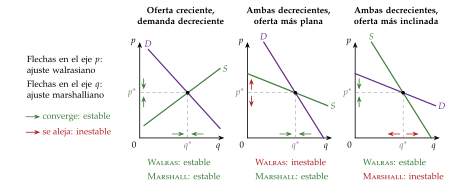
Fuente: elaboración propia a partir de Varian (1992, cap. 21).
Cómo se lee el gráfico: cada panel está debajo de la columna de la tabla a la que corresponde, y bajo la primera columna va la leyenda. Las flechas sobre el eje de precios son el ajuste walrasiano (se mueve el precio) y las del eje de cantidades, el marshalliano (se mueve la cantidad); un ajuste es estable si sus flechas apuntan hacia el equilibrio (en verde) e inestable si se alejan (en rojo).
Valoración: si el equilibrio es estable, el propio mercado tiende a él sin intervención; si no, la mano invisible no basta. En equilibrio general la pregunta es la del tanteo multimercado (II.1.3 y anexo B.3).
E. Anexo: estática comparativa del modelo 2×2×2×2: Stolper-Samuelson y Rybczynski
Una vez estudiadas la existencia y la unicidad del equilibrio (II.1), este anexo recoge cómo cambia cuando cambian los datos: es la estática comparativa que aplican los modelos computables (III.5).
Idea: ¿cómo cambia el equilibrio si cambian los datos (preferencias, dotaciones, tecnología, impuestos)? Si \(\vec{z}(\vec{p};\alpha)=\vec{0}\) y el equilibrio es regular, el teorema de la función implícita da, con el numerario fijo, \[\frac{d\vec{p}^*_{-1}}{d\alpha}=-\big[D_{\vec{p}_{-1}}\vec{z}_{-1}(\vec{p}^*;\alpha)\big]^{-1}D_\alpha\vec{z}_{-1}(\vec{p}^*;\alpha),\] donde el subíndice \(-1\) indica que se quitan el bien 1, el numerario, y su mercado. El signo no está determinado en general (SMD). Samuelson (1947) muestra con el principio de correspondencia que las condiciones de estabilidad dan el signo de muchos de estos efectos; con sustitutivos brutos, un aumento de la demanda de un bien sube su precio relativo frente a todos los demás (Mas-Colell, Whinston y Green, 1995, párr. 17.G).
En el 2×2×2×2 con rendimientos constantes los resultados son nítidos y son la base de la teoría del comercio internacional [ver tema 3.B.5], donde \(w_L\) y \(w_K\) se escriben a menudo \(w\) y \(r\). Cada bien tiene un coste unitario \(c_j(w_L,w_K)\) y unos requerimientos unitarios \(a_{Lj}(\vec{w})=\partial c_j/\partial w_L\) y \(a_{Kj}(\vec{w})=\partial c_j/\partial w_K\) (lema de Shephard) [ver tema 3.A.12].
El equilibrio de la producción, si se producen los 2 bienes, se resume en 4 ecuaciones: \[\underbrace{p_X=c_X(w_L,w_K),\quad p_Y=c_Y(w_L,w_K)}_{\text{beneficio nulo}},\qquad \underbrace{a_{LX}X+a_{LY}Y=\overline{L},\quad a_{KX}X+a_{KY}Y=\overline{K}}_{\text{pleno empleo}}.\]
Del lado de los precios (gráfico 11): las 2 primeras ecuaciones determinan \((w_L,w_K)\) a partir de \((p_X,p_Y)\), sin depender de las dotaciones. Diferenciando, con \(s_{Lj}=w_La_{Lj}/p_j\) la participación del trabajo en el coste de \(j\) y tasas de variación con circunflejo, \[\hat p_X=s_{LX}\hat w_L+s_{KX}\hat w_K,\qquad \hat p_Y=s_{LY}\hat w_L+s_{KY}\hat w_K .\] Cada precio es una media ponderada de los precios de los factores. Si \(X\) es intensivo en trabajo (\(s_{LX}>s_{LY}\)) y \(\hat p_X>\hat p_Y\), entonces \(\hat w_L>\hat p_X>\hat p_Y>\hat w_K\): es el efecto magnificación de Jones (1965), que contiene el teorema de Stolper-Samuelson (Stolper y Samuelson, 1941): si sube el precio relativo de un bien, sube más que proporcionalmente la remuneración real del factor que usa intensivamente y baja la del otro.
Demostración: con beneficio nulo, \(p_j=w_La_{Lj}+w_Ka_{Kj}\), así que las participaciones suman 1, \(s_{Lj}+s_{Kj}=1\), y cada \(\hat p_j\) es una media ponderada, con pesos estrictamente positivos, de \(\hat w_L\) y \(\hat w_K\): está estrictamente entre los 2 si \(\hat w_L\neq\hat w_K\).39 Restando las 2 ecuaciones y usando \(s_{Kj}=1-s_{Lj}\), \[\hat p_X-\hat p_Y=(s_{LX}-s_{LY})\,(\hat w_L-\hat w_K).\] Si \(s_{LX}>s_{LY}\) y \(\hat p_X>\hat p_Y\), entonces \(\hat w_L>\hat w_K\). Como los 2 precios de los bienes son medias de \(\hat w_L\) y \(\hat w_K\), quedan entre ellos: \(\hat w_L>\hat p_X>\hat p_Y>\hat w_K\).∎
Del lado de las cantidades (gráfico 12): a precios de los bienes constantes, los precios de los factores y los \(a_{ij}\) no cambian, y las ecuaciones de pleno empleo dan, con \(\ell_{Lj}=a_{Lj}q_j/\overline{L}\) la fracción del trabajo empleada en \(j\) (con \(q_X=X\), \(q_Y=Y\)), \[\hat{\overline{L}}=\ell_{LX}\hat X+\ell_{LY}\hat Y,\qquad \hat{\overline{K}}=\ell_{KX}\hat X+\ell_{KY}\hat Y .\] Si \(X\) es intensivo en trabajo y \(\hat{\overline{L}}>\hat{\overline{K}}\), entonces \(\hat X>\hat{\overline{L}}>\hat{\overline{K}}>\hat Y\): es el teorema de Rybczynski (Rybczynski, 1955): a precios constantes, si aumenta la dotación de un factor, aumenta más que proporcionalmente la producción del bien que lo usa intensivamente y cae la del otro.
Demostración: las fracciones de cada factor empleadas en los 2 sectores suman 1, \(\ell_{LX}+\ell_{LY}=1\) y \(\ell_{KX}+\ell_{KY}=1\), así que \(\hat{\overline{L}}\) y \(\hat{\overline{K}}\) son medias ponderadas de \(\hat X\) y \(\hat Y\). Restando las 2 ecuaciones, \[\hat{\overline{L}}-\hat{\overline{K}}=(\ell_{LX}-\ell_{KX})\,(\hat X-\hat Y).\] Que \(X\) sea intensivo en trabajo equivale a que emplee una fracción mayor del trabajo que del capital, \(\ell_{LX}>\ell_{KX}\). Si \(\hat{\overline{L}}>\hat{\overline{K}}\), entonces \(\hat X>\hat Y\), y como las 2 dotaciones son medias de \(\hat X\) y \(\hat Y\), quedan entre ellas: \(\hat X>\hat{\overline{L}}>\hat{\overline{K}}>\hat Y\).∎
Valoración: los resultados dependen de que se produzcan los 2 bienes y de que no haya reversión de intensidades factoriales. Con más bienes que factores, o más factores que bienes, solo se mantienen versiones débiles (Jones, 1965).
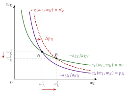
Fuente: elaboración propia a partir de Jones (1965) y Martinez-Giralt (2008, cap. 4).
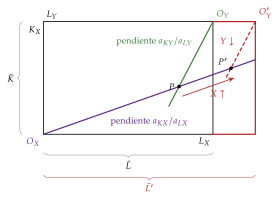
Fuente: elaboración propia a partir de Jones (1965) y Martinez-Giralt (2008, cap. 4).
F. Anexo: aspectos para el test y preguntas del tribunal
Preguntas tipo test del primer ejercicio: simulador de test.
Ley de Walras: identidad (\(\vec{p}\cdot\vec{z}(\vec{p})\equiv 0\) a cualquier precio), no condición de equilibrio; solo exige no saciedad local. No es la ley de Say.
Bienes libres: \(p^*_k=0\) y \(z_k(\vec{p}^*)\leq 0\); bienes económicos: \(p^*_k>0\) y \(z_k(\vec{p}^*)=0\).
Existencia:
Wald (1935-1936);
Arrow y Debreu (1954) y McKenzie (1954) con punto fijo;
Brouwer (funciones), Kakutani (correspondencias).
Para la existencia basta \(\vec{z}\) continua, homogénea de grado 0 y con la ley de Walras.
Unicidad y estabilidad:
sustitutivos brutos \(\Rightarrow\) equilibrio único y globalmente estable (Arrow, Block y Hurwicz, 1959);
contraejemplo de Scarf (1960) con 3 bienes complementarios;
economías regulares: número finito e impar de equilibrios (Debreu, 1970);
SMD (1972-1974).
Teoremas del bienestar: el primero no necesita convexidad; el segundo, sí.
Núcleo: el equilibrio walrasiano está en el núcleo; con réplicas, el núcleo converge al equilibrio (Debreu y Scarf, 1963; Aumann, 1964, con un continuo de agentes).
Fechas: Walras (1874), Edgeworth (1881), Pareto (1906), Patinkin (1956), Arrow (1953), Debreu (1959), Radner (1972), Scarf (1967; con Hansen, 1973).
Preguntas probables del tribunal
¿Por qué no basta con contar ecuaciones e incógnitas para probar la existencia del equilibrio?
¿Qué papel desempeña la convexidad en la existencia? ¿Y en el primer teorema del bienestar?
¿Qué dice exactamente el teorema de Sonnenschein-Mantel-Debreu? ¿Por qué no contradice la existencia?
¿Por qué la sustitución bruta garantiza a la vez unicidad y estabilidad?
¿Qué diferencia hay entre la ley de Walras y la ley de Say?
¿Por qué el equilibrio walrasiano está en el núcleo? ¿Qué añade el teorema de Debreu y Scarf?
¿Es eficiente el equilibrio con mercados incompletos? ¿Y restringidamente eficiente?
¿Por qué es difícil introducir dinero en el modelo de Arrow-Debreu?
Bibliografía
Es un método muy extendido en las ciencias sociales: sostiene que los fenómenos sociales, su estructura y sus cambios, se explican en principio a partir de los individuos, de sus metas, sus creencias y sus acciones, y ve la evolución de la sociedad como el agregado de las decisiones de los particulares. Es, por tanto, un reduccionismo: explica las entidades grandes a partir de las pequeñas.↩︎
La microeconomía contemporánea considera esta separación estricta entre consumidores y productores una simplificación excesiva (Ekelund y Hébert, 2014, cap. 26): lo muestran las «tecnologías del consumo», como el enfoque de características de Lancaster (1966) o la producción doméstica de Becker (1965) y de Gronau (1977) o la economía de la información de Stigler (1961), en la que conocer los precios y las calidades exige una búsqueda costosa que se combina con el bien físico. La microeconomía estudia también otros agentes, como el sector público o las instituciones financieras.↩︎
La interdependencia obliga a resolver sistemas de ecuaciones no lineales con restricciones de no negatividad; de ahí el uso de la topología y del análisis convexo en esta teoría.↩︎
Los modelos de equilibrio general se clasifican según el poder de mercado de los agentes, en competitivos y con competencia imperfecta (oligopolio [ver tema 3.A.19], competencia monopolística [ver tema 3.A.18]), y según el origen de los bienes, en modelos de intercambio puro, en los que las dotaciones de bienes son exógenas, y modelos con producción, en los que los bienes salen de la actividad de las empresas.↩︎
En Suecia, antes de la escuela de Estocolmo (Myrdal, Lindahl, Lundberg y Ohlin, entre 1925 y 1940 aproximadamente, que intenta llevar la teoría neoclásica de Wicksell de lo estático a lo dinámico), destacan Wicksell, su maestro, y Cassel, del que la escuela se distanció por su rivalidad con Wicksell. Es Cassel (1918) quien recoge el testigo de Walras: difunde una versión simplificada del sistema walrasiano, con coeficientes fijos y sin utilidad, que es la que estudian después Wald y el coloquio de Viena (The History of Economic Thought Website, 2026c, 2026b, 2026a). Sobre los herederos de Walras, Ekelund y Hébert (2014, cap. 17).↩︎
Kenneth Arrow recibió el Premio Nobel en 1972, junto con John Hicks, «por sus contribuciones pioneras a la teoría del equilibrio económico general y a la teoría del bienestar» (The Nobel Prize, 1972); Gérard Debreu, en 1983, «por incorporar nuevos métodos analíticos a la teoría económica y por su rigurosa reformulación de la teoría del equilibrio general» (The Nobel Prize, 1983).↩︎
Cada agente conoce los precios y sus propias preferencias o su tecnología; no necesita conocer las de los demás, porque los precios resumen toda la información relevante.↩︎
Si los hubiera, los precios dejarían de ser señales válidas, porque no recogerían todos los costes y beneficios, y el equilibrio competitivo, si existe, no sería eficiente [ver tema 3.A.23].↩︎
Para la ley de Walras basta la no saciedad local, y para la existencia, la convexidad no estricta (apartado II.1.1). La convexidad estricta hace que la demanda sea una función y no una correspondencia. La utilidad marginal decreciente no es un supuesto del modelo: no es una propiedad ordinal.↩︎
Arrow y Debreu (1954) suponen rendimientos decrecientes, de modo que las empresas tienen beneficios y la renta de cada consumidor incluye su participación en ellos. McKenzie (1959) trabaja con rendimientos constantes: los beneficios son nulos y los rendimientos decrecientes se tratan como constantes en un factor más, «empresarial», que pertenece a los consumidores.↩︎
La función de producción es una relación puramente técnica entre factores y producción: da la máxima cantidad de producto que se obtiene con cada combinación de factores, de modo que solo recoge los métodos de producción técnicamente eficientes [ver tema 3.A.11].↩︎
Las 2 tecnologías pueden ser distintas: no tienen por qué usar los factores con la misma intensidad.↩︎
Walras no habla de un subastador: «[…] supposons qu’on y crie \(m(m-1)\) prix des \(m\) marchandises les unes en les autres. Ces prix peuvent être criés au hasard ; pour mieux dire, ils ne peuvent être criés qu’au hasard. Et toutefois il est certain qu’on peut faire en sorte qu’il y en ait parmi eux \((m-1)(m-1)=m(m-1)-(m-1)\) qui soient liés aux \(m-1\) autres par la condition d’équilibre général. A ces prix, ainsi criés, chaque échangeur détermine sa demande ou offre de (A), (B), (C), (D)… Cela se fait après réflexion, sans calcul, mais exactement comme cela se ferait par le calcul en vertu du système des équations d’équivalence des quantités demandées et offertes et de satisfaction maximum complété par la restriction convenue. Il s’agit de fonder sur le fait de cette détermination sans calcul une méthode de résolution par tâtonnement des équations d’égalité de l’offre et de la demande totales» (Walras, 1874, párr. 126, 127). En castellano: «[…] supongamos que en él se vocean \(m(m-1)\) precios de las \(m\) mercancías unas en términos de otras. Estos precios pueden vocearse al azar; mejor dicho, solo pueden vocearse al azar. Y, sin embargo, es seguro que se puede hacer que entre ellos haya \((m-1)(m-1)=m(m-1)-(m-1)\) que estén ligados a los otros \(m-1\) por la condición de equilibrio general. A estos precios, así voceados, cada participante en el intercambio determina su demanda u oferta de (A), (B), (C), (D)… Lo hace tras reflexionar, sin cálculo, pero exactamente como se haría mediante el cálculo en virtud del sistema de ecuaciones de equivalencia de las cantidades demandadas y ofrecidas y de satisfacción máxima, completado con la restricción convenida. Se trata de fundar sobre el hecho de esta determinación sin cálculo un método de resolución por tanteo de las ecuaciones de igualdad de la oferta y la demanda totales» (traducción propia; las negritas son nuestras). El sujeto es el impersonal on: nadie vocea los precios en concreto, y la restricción convenida es que nadie ofrezca más de lo que posee. La literatura posterior personifica ese proceso en un subastador walrasiano. En las primeras ediciones de los Éléments el tanteo admite producción e intercambios a precios de desequilibrio; tras las críticas de Bertrand y Edgeworth (con intercambios fuera del equilibrio, la riqueza de los agentes cambia en cada ronda), Walras lo sustituye por un tanteo con compromisos escritos («bons») que solo se ejecutan en el equilibrio (Walker, 1987). Con ello el tanteo deja de describir cómo se ajustan los mercados reales y pasa a ser un proceso virtual, en tiempo lógico. La idea de un mecanismo que lleva los precios de mercado a los «naturales» está ya en Smith (1776, lib. I, cap. VII).↩︎
El mismo problema puede resolverse en 2 etapas: primero, la forma más barata de producir cada cantidad (la función de costes) y después la cantidad que maximiza el beneficio, \(p_j=\mathrm{CMg}_j\) [ver tema 3.A.12]. El planteamiento general, con \(I\) consumidores, \(J\) empresas y \(n\) bienes, está en el anexo A.↩︎
Si se quiere que la oferta sea una función y no una correspondencia, hace falta \(F_j\) estrictamente cóncava, lo que implica rendimientos estrictamente decrecientes: con \(F_j(\vec{0})=0\), \(F_j(\lambda\vec{z})<\lambda F_j(\vec{z})\) para \(\lambda>1\). Con rendimientos constantes la escala de cada empresa queda indeterminada a los precios de equilibrio y la fija el pleno empleo de los factores. Las isocuantas estrictamente convexas (cuasiconcavidad estricta) no imponen, en cambio, ningún tipo de rendimientos [ver tema 3.A.11].↩︎
Los 2 vértices de la caja, en los que una empresa usa todos los factores y la otra ninguno, también forman parte de la curva de contrato. La pendiente común de las isocuantas cambia a lo largo de la curva de contrato: solo es constante (y la curva de contrato es la diagonal) si las 2 tecnologías usan los factores con la misma intensidad.↩︎
Es decreciente, porque las funciones de producción son crecientes. Su forma depende de los rendimientos y de las intensidades factoriales: con rendimientos decrecientes es estrictamente cóncava; con rendimientos constantes es estrictamente cóncava si los 2 bienes usan los factores en proporciones distintas y lineal si las intensidades factoriales coinciden; con rendimientos crecientes puede ser convexa y el equilibrio competitivo puede no existir [ver tema 3.B.6].↩︎
La intuición de que la RMT sea el cociente de los costes marginales: para producir una unidad más de \(X\) hay que retirar de la producción de \(Y\) factores que cuestan \(\mathrm{CMg}_X\), y con ellos se dejan de producir \(\mathrm{CMg}_X/\mathrm{CMg}_Y\) unidades de \(Y\). En un tramo pequeño de la FPP, la distancia vertical entre 2 puntos es lo que se sacrifica de \(Y\) y la horizontal, lo que se gana de \(X\); su cociente es la pendiente (en valor absoluto) de la frontera. Vale cuando los factores se asignan con eficiencia y a precios comunes, como en el equilibrio competitivo.↩︎
Derivando \(x_{ik}\big(\vec{p},\vec{p}\cdot\vec{\omega}_i\big)\) respecto de \(p_k\) y usando la ecuación de Slutsky, \(\frac{d x_{ik}}{d p_k}=S^i_{kk}-\big(x_{ik}-\omega_{ik}\big)\frac{\partial x_{ik}}{\partial \overline{W}_i}\), donde \(S^i_{kk}<0\) es el efecto sustitución. Para un vendedor neto del bien (\(x_{ik}<\omega_{ik}\)) y un bien normal, el segundo término es positivo: la subida del precio lo enriquece y su demanda del bien puede aumentar aunque el bien no sea Giffen.↩︎
Aquí \(z\) es el exceso de demanda, como en el equilibrio parcial [ver tema 3.A.16]; no debe confundirse con el vector de factores \(\vec{z}=(z_L,z_K)\) de la teoría de la producción [ver tema 3.A.11].↩︎
No debe confundirse con la ley de Say. La primera es una identidad que incluye todos los mercados, también el del dinero si lo hay; la ley de Say, en la formulación de Lange (1942a), afirma que el valor de los excesos de demanda de los bienes, sin contar el dinero, es idénticamente nulo, y por tanto que nunca puede haber un exceso de oferta general de bienes. La crítica de Keynes se dirige a la segunda: en una economía monetaria, un exceso de oferta de bienes puede ir acompañado de un exceso de demanda de dinero (Becker y Baumol, 1952) [ver tema 3.A.2] [ver tema 3.A.4].↩︎
Igualar ecuaciones e incógnitas no es condición necesaria ni suficiente. Por el teorema de Rouché-Frobenius, un sistema de ecuaciones lineales puede ser compatible determinado (una solución), compatible indeterminado (infinitas) o incompatible (ninguna). Con ecuaciones lineales independientes la solución existe y es única, pero puede tener precios o cantidades negativos, sin sentido económico; con ecuaciones no lineales puede no haber solución (\(x^2+1=0\)) o haber varias.↩︎
El primer uso de un teorema de punto fijo en economía es el de Neumann (1937); Kakutani (1941) lo extiende a correspondencias y Nash (1950a) lo aplica al equilibrio de un juego [ver tema 3.A.14].↩︎
La continuidad en los precios nulos plantea un problema: si los bienes son deseables, la demanda de un bien gratuito es infinita. No se resuelve suponiendo saciedad, que contradiría la no saciedad local que piden la ley de Walras y el primer teorema del bienestar, sino con la condición de frontera de I.2.3: el exceso de demanda crece sin límite cuando un precio tiende a 0, de modo que todos los precios de equilibrio son positivos (Mas-Colell, Whinston y Green, 1995, párr. 17.C). Los detalles, en el anexo B.↩︎
Si la demanda o la oferta son correspondencias (preferencias o tecnologías convexas pero no estrictamente), se usa el teorema de Kakutani (1941), que pide una correspondencia hemicontinua superiormente con valores no vacíos y convexos. Hay también pruebas con topología diferencial.↩︎
En un bien libre el exceso de demanda es negativo o nulo a cualquier precio, \(z_k\leq 0\), de modo que la regla baja su precio ronda tras ronda hasta el límite \(p_k=0\), donde el máximo lo detiene: ahí el bien sigue sobrando, sin que el precio pueda bajar más.↩︎
Cómo cambia el equilibrio cuando cambian los datos (preferencias, dotaciones, tecnología). En el 2×2×2×2 con rendimientos constantes da los teoremas de Stolper-Samuelson y de Rybczynski, base de la teoría del comercio internacional [ver tema 3.B.5] (anexo E).↩︎
En equilibrio parcial, de la maximización de la utilidad se deducen propiedades de la demanda (la ecuación de Slutsky, la ley de la demanda para los bienes normales) [ver tema 3.A.9]. El teorema SMD muestra que, al agregar, esas propiedades desaparecen salvo la continuidad, la homogeneidad y la ley de Walras, porque los efectos renta de cada consumidor dependen de su dotación y no se compensan (I.2.2).↩︎
Bentham y los utilitaristas, a finales del siglo XVIII y principios del XIX, definen el óptimo social como la asignación que maximiza la suma de las utilidades («la mayor felicidad para el mayor número»), lo que exige compararlas entre personas y, con utilidad marginal decreciente, aboga por redistribuir hacia la igualdad; J. S. Mill (1848) defiende redistribuir la renta sin sacrificar la eficiencia. Algunos autores anteriores a la revolución marginalista, como Gossen, afirmaron que la competencia lleva al óptimo social, y Walras se lo criticó; a su vez, Launhardt criticó a Walras por sostener que el equilibrio competitivo maximiza la utilidad total tras el intercambio. Pareto rompe la alianza entre la economía neoclásica y el utilitarismo: la utilidad es una representación ordinal de las preferencias, que no admite comparaciones interpersonales, y por eso sustituye «utilidad» por «ofelimidad» (ofelimità). Sobre Bentham y el utilitarismo, Ekelund y Hébert (2014, cap. 6); sobre Pareto, el equilibrio general y el bienestar, Ekelund y Hébert (2014, cap. 17).↩︎
En respuesta, Foley (1967) propone las asignaciones justas: las que, además de eficientes en el sentido de Pareto, son equitativas, entendidas como libres de envidia (ningún agente prefiere la cesta de otro a la suya) [ver tema 3.A.24].↩︎
Feldman (1987) resume la fuerza del teorema con una imagen: si las decisiones de producción y consumo se tomaran lanzando dardos a una diana, la probabilidad de acertar en un óptimo sería nula, así que decir que el mercado lo alcanza es decir mucho.↩︎
Wicksell, en sus reseñas de Pareto (Wicksell, 1958), le reprocha confundir el máximo de ofelimidad, que la libre competencia alcanza casi por definición, con el máximo de bienestar social, que no tiene por qué alcanzar.↩︎
Edgeworth muestra que la negociación bilateral deja un abanico de acuerdos posibles (el tramo \(CC'\)) y que el resultado depende del poder de negociación, pero no dice cuál es. La teoría de la negociación lo intenta por 2 caminos. Nash (1950b) sigue el camino axiomático: pide a la solución 4 propiedades razonables (que sea eficiente, que trate igual a agentes iguales, que no dependa de las unidades en que se mide la utilidad y que no cambie si se quitan alternativas que de todos modos no se habrían elegido) y prueba que solo la cumple el acuerdo que maximiza el producto de las ganancias de cada uno respecto de lo que obtendría sin acuerdo, \(\big(U_A-U_A^0\big)\big(U_B-U_B^0\big)\). En la caja, el punto de desacuerdo es la dotación \(\vec{\omega}\), y la solución es uno de los puntos del tramo \(CC'\). Con poder de negociación desigual, la solución de Nash generalizada se aplica al monopolio bilateral [ver tema 3.A.17]. Rubinstein (1982) sigue el camino estratégico: los 2 agentes se turnan para proponer un reparto, y cada ronda sin acuerdo les cuesta, porque descuentan el futuro. El juego tiene un único equilibrio de Nash perfecto en subjuegos, en el que se acuerda en la primera oferta y se lleva más el agente más paciente: el poder de negociación de Edgeworth es aquí la paciencia. Binmore, Rubinstein y Wolinsky (1986) unen los 2 enfoques: cuando el tiempo entre ofertas tiende a 0, el reparto de Rubinstein converge a una solución de Nash (asimétrica, con unos pesos que dependen de la paciencia de cada uno). La relación con el núcleo (III.2) es de complemento: el núcleo dice qué acuerdos son posibles (con 2 agentes, todo el tramo \(CC'\)) y la teoría de la negociación, cuál de ellos se elige. Al crecer el número de agentes el núcleo se encoge hasta el equilibrio walrasiano y el poder de negociación deja de importar [ver tema 3.A.14] [ver tema 3.A.17].↩︎
En macroeconomía la regla se escribe \(M^D=k\,P\,Y\), con \(k\) la constante de Cambridge [ver tema 3.A.35]; aquí se usa \(\varphi\) porque \(k\) es el índice de los bienes.↩︎
Además, obvia los costes de operar los propios mercados y da por hecho que el estado de la naturaleza que ocurre es verificable por todos, algo que en la práctica cuesta y a veces no se puede hacer.↩︎
Otra aplicación es la evaluación de impuestos y transferencias: por ejemplo, el efecto de un impuesto sobre la renta en la oferta de trabajo y su incidencia en equilibrio general.↩︎
Las instituciones europeas usan modelos de la misma familia: QUEST en la Comisión (Comisión Europea, Centro Común de Investigación, 2026), el NAWM II en el BCE (Coenen et al., 2018) y FiMod o BEMOD en el Banco de España (Stähler y Thomas, 2012; Andrés, Burriel y Estrada, 2006). EREMS distingue perturbaciones financieras, fiscales (de ingresos y de gastos), externas, de competencia en el mercado de bienes y servicios y otras macroeconómicas.↩︎
Si las preferencias son estrictamente monótonas, el exceso de demanda no está definido cuando un precio es 0 (la demanda de ese bien sería infinita). La prueba se adapta trabajando en subconjuntos compactos del interior del símplice y usando que \(\lVert\vec{z}(\vec{p})\rVert\to\infty\) cuando algún \(p_k\to 0\); el resultado es un equilibrio con todos los precios positivos (véanse Mas-Colell, Whinston y Green (1995, párr. 17.C) y Jehle y Reny (2011, teorema 5.3)). Por eso no hace falta suponer saciedad, que contradiría la no saciedad local que piden la ley de Walras y el primer teorema del bienestar.↩︎
Al diferenciar \(p_j=c_j(w_L,w_K)\) no aparecen los cambios de los \(a_{ij}\): por el lema de Shephard, la empresa ya los ha elegido para minimizar el coste, y su efecto es de segundo orden (\(w_L\,da_{Lj}+w_K\,da_{Kj}=0\)).↩︎